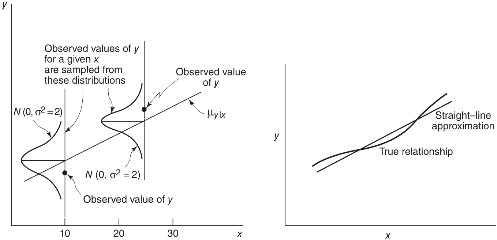
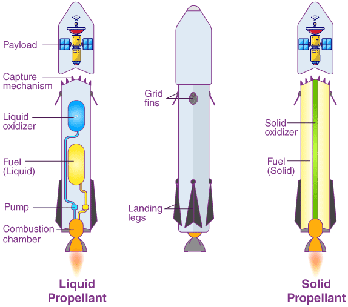
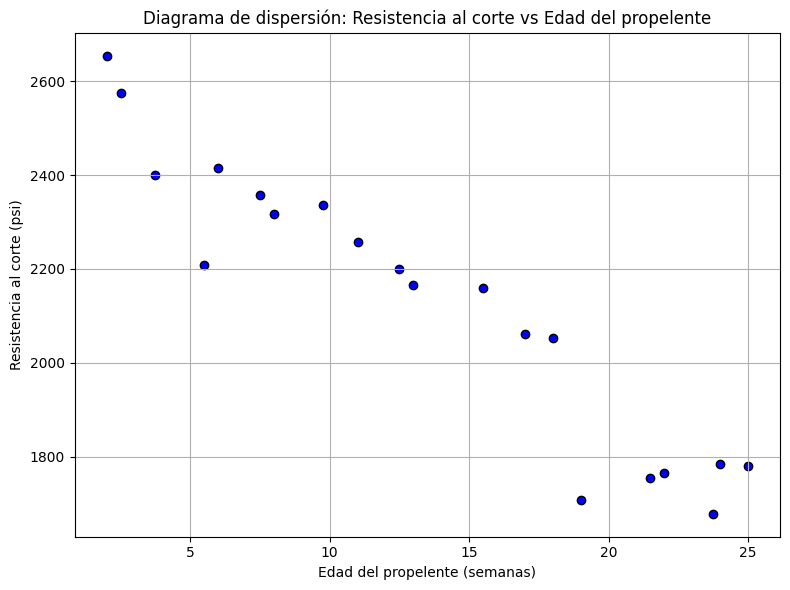
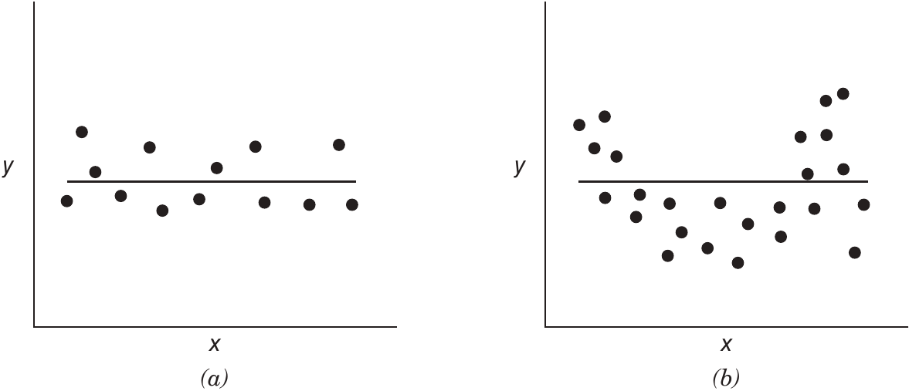
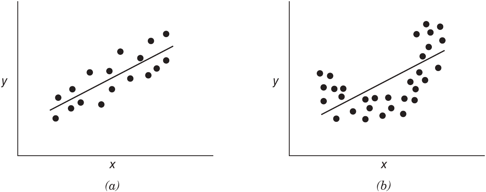
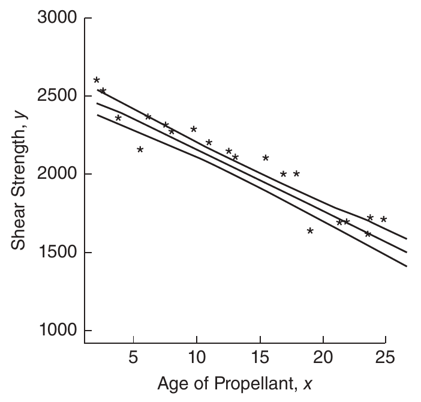
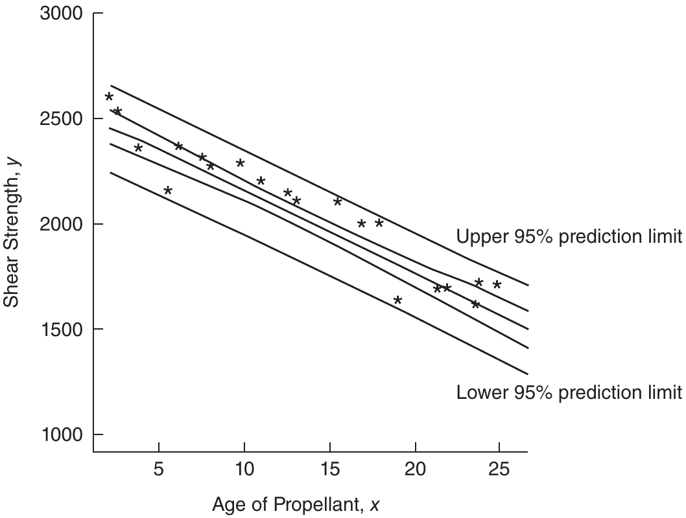
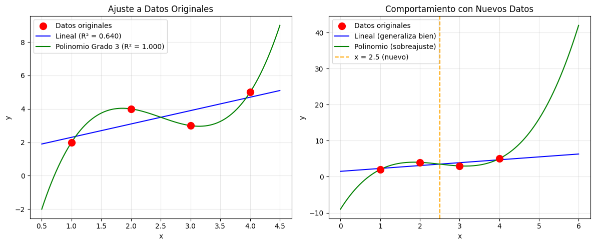
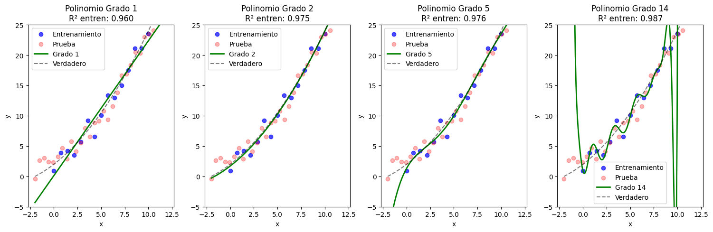

2. Regresión Lineal Simple#
2.1. Modelo de Regresión Lineal Simple#
El modelo de regresión lineal simple describe la relación entre una variable independiente \(x\) y una variable dependiente \(y\) mediante una función lineal
\[ y = \beta_0 + \beta_1 x + \varepsilon \]\(\beta_0\) es el intercepto y \(\beta_1\) la pendiente; ambos son parámetros desconocidos.
\(\varepsilon\) representa el error aleatorio, con media cero, varianza \(\sigma^2\) desconocida, y errores no correlacionados.
Se asume que \(x\) es controlada por el analista (no aleatorios), con error de medición despreciable, y que \(y\) es una variable aleatoria con distribución condicionada a cada valor de \(x\). Las propiedades del modelo son
\[\begin{split} \begin{align} \mathbb{E}(y \mid x) &= \mathbb{E}(\beta_0 + \beta_1 x + \varepsilon) = \beta_0 + \beta_1 x \\ \mathbb{Var}(y \mid x) &= \mathbb{Var}(\beta_0 + \beta_1 x + \varepsilon) = \sigma^2 \end{align} \end{split}\]Esto implica que la media de \(y\) es función lineal de \(x\), la varianza de \(y\) es constante e independiente de \(x\), y las respuestas son no correlacionadas debido a la independencia de los errores
Interpretación
\(\beta_1\) indica el cambio esperado en \(y\) ante un aumento unitario en \(x\).
\(\beta_0\) representa la media de \(y\) cuando \(x = 0\), aunque puede no tener interpretación práctica si \(x = 0\) no está en el rango observado.
2.2. Estimación por Mínimos Cuadrados#
Los parámetros \(\beta_0\) y \(\beta_1\) son desconocidos y deben estimarse a partir de datos muestrales. Supóngase que se cuenta con \(n\) pares de datos observados: \((y_1, x_1), (y_2, x_2), \dots, (y_n, x_n)\).
Estos datos pueden provenir de un experimento controlado, un estudio observacional o registros históricos (estudio retrospectivo).
El objetivo es encontrar los valores de \(\beta_0\) y \(\beta_1\) que minimicen la suma de los cuadrados de los errores (residuos), definidos como las diferencias entre los valores observados \(y_i\) y los valores ajustados \(\hat{y}_i\) producidos por el modelo.
Este procedimiento se conoce como estimación por mínimos cuadrados.
2.2.1. Estimación de \(\beta_0\) y \(\beta_1\) mediante mínimos cuadrados#

Figura 2.1 Generación de observaciones en regresión lineal: aproximación de una relación compleja.#
Observación
En cada valor de \(x\), los puntos de la muestra se concentran en el pico de la distribución normal, es decir, alrededor de la recta. Se observan datos agrupados o repetidos cerca de la media, y pocos en los extremos de la normal.
Cuando usamos regresión lineal, estamos diciendo: para cada valor de \(x\), la respuesta \(y\) no es un número fijo, sino una variable aleatoria con media en la recta de regresión y varianza constante.
Los datos que observamos son realizaciones ruidosas de esa distribución. Además, el modelo lineal es solo una aproximación: si la relación verdadera no es lineal, la recta trata de capturar la tendencia general.
El método de mínimos cuadrados se utiliza para estimar los parámetros \(\beta_0\) y \(\beta_1\) del modelo de regresión lineal simple. Se busca minimizar la suma de los cuadrados de las diferencias entre las observaciones \(y_i\) y la recta ajustada. A partir del modelo
La suma de cuadrados a minimizar es
Los estimadores de mínimos cuadrados \(\hat{\beta}_0\) y \(\hat{\beta}_1\) satisfacen:
Derivada parcial respecto a \(\beta_0\):
\[ \frac{\partial S}{\partial \beta_0} = -2 \sum_{i=1}^n (y_i - \beta_0 - \beta_1 x_i) = 0 \]Derivada parcial respecto a \(\beta_1\):
\[ \frac{\partial S}{\partial \beta_1} = -2 \sum_{i=1}^n x_i (y_i - \beta_0 - \beta_1 x_i) = 0 \]Obtenemos el siguiente sistema de ecuaciones normales
Despejando \(\beta_{0}\) de la Ecuación (2.1) y usando la definición de la media, se obtiene
Luego, reemplazando \(\hat{\beta}_{0}\) en la segunda ecuación en (2.1) obtenemos \(\hat{\beta}_{1}\)
En conclusión
(2.2)#\[ \hat{\beta}_0 = \bar{y} - \hat{\beta}_1 \bar{x} \]y
(2.3)#\[ \hat{\beta}_1 = \frac{ \displaystyle{ \sum_{i=1}^n y_i x_i } - \frac{\displaystyle{ \left( \sum_{i=1}^n y_i \right) \left( \sum_{i=1}^n x_i \right)}}{n} }{ \displaystyle{ \sum_{i=1}^n x_i^2 } - \frac{\displaystyle{ \left( \sum_{i=1}^n x_i \right)^2}}{n} } \]
Las siguientes son expresiones en notación compacta
Varianza corregida de \(x\)
\[\begin{split} \begin{align} S_{xx} &= \sum_{i=1}^n (x_i - \bar{x})^2 \\[6pt] &= \sum_{i=1}^n \left(x_i^2 - 2x_i\bar{x} + \bar{x}^2\right) \\[6pt] &= \sum_{i=1}^n x_i^2 - 2\bar{x}\sum_{i=1}^n x_i + n\bar{x}^2 \\[6pt] &= \sum_{i=1}^n x_i^2 - n\bar{x}^2 \\[6pt] &= \sum_{i=1}^n x_i^2 - \frac{1}{n}\left(\sum_{i=1}^n x_i\right)^2 \end{align} \end{split}\]entonces
\[ S_{xx} = \displaystyle{ \sum_{i=1}^n x_i^2 } - \frac{ \displaystyle{ \left( \sum_{i=1}^n x_i \right)^2 } }{n} = \displaystyle{ \sum_{i=1}^n (x_i - \bar{x})^2 } \]Covarianza entre \(x\) e \(y\)
(2.4)#\[ S_{xy} = \displaystyle{ \sum_{i=1}^n x_i y_i } - \frac{\displaystyle{\left(\textcolor{red}{\sum_{i=1}^n x_i}\right)\left(\sum_{i=1}^n y_i \right) } }{\textcolor{red}{n}} = \displaystyle{ \sum_{i=1}^n y_i(x_i - \bar{x})} \]Por lo tanto
\[ \hat{\beta}_1 = \frac{S_{xy}}{S_{xx}} \]El modelo ajustado de regresión es
El residuo para cada observación es
Los residuos son fundamentales para evaluar la adecuación del modelo y detectar posibles violaciones a los supuestos, tema que se desarrolla en capítulos posteriores.
2.2.2. Aplicación: Datos de Propulsor de Cohete#
Este ejemplo analiza la relación entre la resistencia al corte (\(y\)) del propelente (mide cuánta fuerza soporta el material del combustible antes de dañarse) y la edad (\(x\)) del lote en semanas (tiempo que ha pasado desde su fabricación), mediante un modelo de regresión lineal simple.

Figura 2.2 Diagrama de un propulsor de cohetes.#
import pandas as pd
import matplotlib.pyplot as plt
import statsmodels.formula.api as smf
import statsmodels.api as sm
df = pd.DataFrame({
'Edad': [
15.50, 23.75, 8.00, 17.00, 5.50, 19.00, 24.00, 2.50, 7.50, 11.00,
13.00, 3.75, 25.00, 9.75, 22.00, 18.00, 6.00, 12.50, 2.00, 21.50
],
'Resistencia': [
2158.70, 1678.15, 2316.00, 2061.30, 2207.50, 1708.30, 1784.70,
2575.00, 2357.90, 2256.70, 2165.20, 2399.55, 1779.80, 2336.75,
1765.30, 2053.50, 2414.40, 2200.50, 2654.20, 1753.70
]
})
df
| Edad | Resistencia | |
|---|---|---|
| 0 | 15.50 | 2158.70 |
| 1 | 23.75 | 1678.15 |
| 2 | 8.00 | 2316.00 |
| 3 | 17.00 | 2061.30 |
| 4 | 5.50 | 2207.50 |
| 5 | 19.00 | 1708.30 |
| 6 | 24.00 | 1784.70 |
| 7 | 2.50 | 2575.00 |
| 8 | 7.50 | 2357.90 |
| 9 | 11.00 | 2256.70 |
| 10 | 13.00 | 2165.20 |
| 11 | 3.75 | 2399.55 |
| 12 | 25.00 | 1779.80 |
| 13 | 9.75 | 2336.75 |
| 14 | 22.00 | 1765.30 |
| 15 | 18.00 | 2053.50 |
| 16 | 6.00 | 2414.40 |
| 17 | 12.50 | 2200.50 |
| 18 | 2.00 | 2654.20 |
| 19 | 21.50 | 1753.70 |
Se propone el siguiente modelo:
\[ y = \beta_0 + \beta_1 x + \varepsilon \]donde:
\(y\): resistencia al corte (psi)
\(x\): edad del propelente (semanas)
\(\beta_0\), \(\beta_1\): parámetros del modelo
\(\varepsilon\): error aleatorio con \(\mathbb{E}(\varepsilon) = 0\) y varianza \(\sigma^2\)
plt.figure(figsize=(8, 6))
plt.scatter(df['Edad'], df['Resistencia'], color='blue', edgecolor='k')
plt.title('Diagrama de dispersión: Resistencia al corte vs Edad del propelente')
plt.xlabel('Edad del propelente (semanas)')
plt.ylabel('Resistencia al corte (psi)')
plt.grid(True)
plt.tight_layout()
plt.show()

Los datos recolectados sugieren una fuerte relación lineal negativa entre edad y resistencia. Para estimar los parámetros se calcula:
Suma de cuadrados de \(x\)
\[ S_{xx} = \sum_{i=1}^{n} x_i^2 - \frac{1}{n} \left( \sum_{i=1}^{n} x_i \right)^2 = 1106.56 \]Suma de productos cruzados
\[ S_{xy} = \sum_{i=1}^{n} x_i y_i - \frac{1}{n} \left( \sum_{i=1}^{n} x_i \right) \left( \sum_{i=1}^{n} y_i \right) = -41112.65 \]Entonces, los estimadores de mínimos cuadrados son:
Pendiente
\[ \hat{\beta}_1 = \frac{S_{xy}}{S_{xx}} = \frac{-41112.65}{1106.56} = -37.15 \]Intercepto (usando \(\bar{x} = 13.36\), \(\bar{y} = 2131.36\)):
\[ \hat{\beta}_0 = \bar{y} - \hat{\beta}_1 \bar{x} = 2131.36 - (-37.15)(13.36) = 2627.82 \]El modelo ajustado es:
Interpretación:
\(\hat{\beta}_1 = -37.15\) indica que por cada semana adicional, la resistencia promedio disminuye en 37.15 psi.
\(\hat{\beta}_0 = 2627.82\) representa la resistencia esperada justo después de la fabricación (\(x = 0\)).
\(y_i\) observado |
\(\hat{y}_i\) estimado |
\(e_i\) (residuo) |
|---|---|---|
2158.70 |
2051.94 |
106.76 |
1678.15 |
1745.42 |
-67.27 |
2316.00 |
2330.59 |
-14.59 |
2061.30 |
1996.21 |
65.09 |
2207.50 |
2423.48 |
-215.98 |
1708.30 |
1921.90 |
-213.60 |
1784.70 |
1736.14 |
48.56 |
2575.00 |
2534.94 |
40.06 |
2357.90 |
2349.17 |
8.73 |
2256.70 |
2219.13 |
37.57 |
2165.20 |
2144.83 |
20.37 |
2399.55 |
2488.50 |
-88.95 |
1799.80 |
1698.98 |
80.82 |
2336.75 |
2265.58 |
71.17 |
1765.30 |
1810.44 |
-45.14 |
2053.50 |
1959.06 |
94.44 |
2414.40 |
2404.90 |
9.50 |
2200.50 |
2163.40 |
37.10 |
2654.20 |
2553.52 |
100.68 |
1753.70 |
1829.02 |
-75.32 |
import pandas as pd
import numpy as np
n = len(df)
Sxx = np.sum(df["Edad"]**2) - (np.sum(df["Edad"])**2) / n
Sxy = np.sum(df["Edad"] * df["Resistencia"]) - (np.sum(df["Edad"]) * np.sum(df["Resistencia"])) / n
b1 = Sxy / Sxx
b0 = df["Resistencia"].mean() - b1 * df["Edad"].mean()
# Predicciones y residuos
df["y_hat"] = b0 + b1 * df["Edad"]
df["Residuo"] = df["Resistencia"] - df["y_hat"]
# Redondear resultados a dos decimales
df_rounded = df.round(2)
# Resultados numéricos
print(f"Sxx = {Sxx:.2f}")
print(f"Sxy = {Sxy:.2f}")
print(f"Pendiente (β1) = {b1:.2f}")
print(f"Intercepto (β0) = {b0:.2f}")
print("\nModelo ajustado:")
print(f"ŷ = {b0:.2f} - {abs(b1):.2f}x")
# Mostrar tabla final
print("\nTabla de valores observados, estimados y residuos")
df_rounded[["Resistencia", "y_hat", "Residuo"]]
Sxx = 1106.56
Sxy = -41112.65
Pendiente (β1) = -37.15
Intercepto (β0) = 2627.82
Modelo ajustado:
ŷ = 2627.82 - 37.15x
Tabla de valores observados, estimados y residuos
| Resistencia | y_hat | Residuo | |
|---|---|---|---|
| 0 | 2158.70 | 2051.94 | 106.76 |
| 1 | 1678.15 | 1745.42 | -67.27 |
| 2 | 2316.00 | 2330.59 | -14.59 |
| 3 | 2061.30 | 1996.21 | 65.09 |
| 4 | 2207.50 | 2423.48 | -215.98 |
| 5 | 1708.30 | 1921.90 | -213.60 |
| 6 | 1784.70 | 1736.14 | 48.56 |
| 7 | 2575.00 | 2534.94 | 40.06 |
| 8 | 2357.90 | 2349.17 | 8.73 |
| 9 | 2256.70 | 2219.13 | 37.57 |
| 10 | 2165.20 | 2144.83 | 20.37 |
| 11 | 2399.55 | 2488.50 | -88.95 |
| 12 | 1779.80 | 1698.98 | 80.82 |
| 13 | 2336.75 | 2265.57 | 71.18 |
| 14 | 1765.30 | 1810.44 | -45.14 |
| 15 | 2053.50 | 1959.06 | 94.44 |
| 16 | 2414.40 | 2404.90 | 9.50 |
| 17 | 2200.50 | 2163.40 | 37.10 |
| 18 | 2654.20 | 2553.52 | 100.68 |
| 19 | 1753.70 | 1829.02 | -75.32 |
2.2.3. Evaluación del modelo#
Se reportan los valores observados, ajustados y residuos. La suma total de residuos es cero, como se espera en un modelo bien especificado.
Entre las preguntas clave están:
¿Qué tan bien se ajusta el modelo a los datos?
¿Es útil para predecir nuevas observaciones?
¿Se cumplen las suposiciones de varianza constante y errores no correlacionados?
Estas preguntas se abordan mediante análisis de residuos, que se consideran aproximaciones de los errores \(\varepsilon_i\). Si los residuos parecen distribuidos aleatoriamente con varianza constante, las suposiciones del modelo son razonables.
2.2.4. Nota sobre el uso de software#
Se presentan resultados computacionales que coinciden con los cálculos manuales. La salida del algoritmo ofrece información complementaria que será discutida en secciones posteriores.
# === Modelo de regresión lineal ===
modelo = smf.ols('Resistencia ~ Edad', data=df).fit()
# Resumen del modelo
print(modelo.summary())
# ANOVA del modelo
anova = sm.stats.anova_lm(modelo, typ=2)
print("\nANOVA del modelo:\n", anova)
OLS Regression Results
==============================================================================
Dep. Variable: Resistencia R-squared: 0.902
Model: OLS Adj. R-squared: 0.896
Method: Least Squares F-statistic: 165.4
Date: Fri, 24 Oct 2025 Prob (F-statistic): 1.64e-10
Time: 13:55:25 Log-Likelihood: -118.63
No. Observations: 20 AIC: 241.3
Df Residuals: 18 BIC: 243.3
Df Model: 1
Covariance Type: nonrobust
==============================================================================
coef std err t P>|t| [0.025 0.975]
------------------------------------------------------------------------------
Intercept 2627.8224 44.184 59.475 0.000 2534.995 2720.649
Edad -37.1536 2.889 -12.860 0.000 -43.223 -31.084
==============================================================================
Omnibus: 6.304 Durbin-Watson: 1.842
Prob(Omnibus): 0.043 Jarque-Bera (JB): 4.281
Skew: -1.109 Prob(JB): 0.118
Kurtosis: 3.464 Cond. No. 31.5
==============================================================================
Notes:
[1] Standard Errors assume that the covariance matrix of the errors is correctly specified.
ANOVA del modelo:
sum_sq df F PR(>F)
Edad 1.527483e+06 1.0 165.376758 1.643344e-10
Residual 1.662549e+05 18.0 NaN NaN
No. Observations (20):cantidad de datos usados.Df Model (1):número de variables explicativas (Edad).Df Residuals = 18se calcula como\[ \text{Df}_{\text{Residuals}} = n - (k + 1) \]donde
\(n = 20\) (número de observaciones)
\(k = 1\) (número de predictores)
\(+1\) viene del intercepto \(\beta_0\)
Entonces:
\[ \text{Df}_{\text{Residuals}} = 20 - (1 + 1) = 18 \]modelo_formula = smf.ols('Resistencia ~ Edad', data=df).fit()ajusta un modelo de Regresión Lineal Ordinaria (OLS) dondeResistenciaes la variable dependiente yEdadla explicativa. Por defecto incluye intercepto (si se quisiera omitir sería'Resistencia ~ Edad - 1'). El método.fit()estima los parámetros por mínimos cuadrados y devuelve un objeto con resultados (RegressionResultsWrapper) que contiene coeficientes (params), errores estándar (bse), valores \(t\), \(p\)-values, predicciones (fittedvalues), residuos, \(R^2\), y grados de libertad del modelo y residuales.resumen_formula = modelo_formula.summary()genera un objetosummarycon la salida tabular estándar: coeficientes, errores, estadísticos \(t\), \(p\), \(R^2\), \(F\), AIC/BIC, pruebas de normalidad (Omnibus, Skew, Kurtosis), Durbin–Watson e intervalos de confianza. El punto y coma (;) solo evita mostrar la salida en notebooks. Para imprimir bastaprint(resumen_formula)omodelo_formula.summary().anova_formula = sm.stats.anova_lm(modelo_formula, typ=2)construye la tabla ANOVA, mostrando sumas de cuadrados (sum_sq), grados de libertad, estadístico \(F\) y su \(p\)-value. Contyp=2se usan sums of squares ajustadas (útil en modelos multivariados; en regresión simple, Type I, II y III coinciden). La tabla incluye una fila para el predictor (Edad) y otra para el residual.En notebooks,
resumen_formula, anova_formuladevuelve ambos objetos.Interpretación:
Intercept= \(\hat{\beta}_0\).Edad= \(\hat{\beta}_1\), cambio esperado enResistenciapor unidad deEdad.El \(p\)-value del coeficiente (
pvalues['Edad']) indica su significancia.En ANOVA,
sum_sqdel predictor mide variación explicada y la del residual, variación no explicada; el estadístico \(F\) evalúa siEdadexplica significativamente más que el error.
Verificación de supuestos:
Linealidad: gráfica
fittedvaluesvsresid.Homoscedasticidad: test Breusch–Pagan (
sm.stats.diagnostic.het_breuschpagan).Normalidad: QQ-plot (
sm.qqplot(modelo_formula.resid, line='s')) o testsm.stats.normal_ad.Autocorrelación: estadístico Durbin–Watson (incluido en el resumen).
Ejemplo de extracción numérica:
print(modelo_formula.params) # coeficientes print(modelo_formula.pvalues) # p-values print(modelo_formula.rsquared) # R^2 print(modelo_formula.conf_int())# IC 95%
2.2.5. Resumen de resultados#
De acuerdo con la salida anterior, se ajustó un modelo de regresión lineal simple para predecir la
Resistenciaen función de laEdaddel propulsor. El modelo estimado fue:\[ \hat{Y}_i = \hat{\beta}_0 + \hat{\beta}_1 X_i + \varepsilon_i \]donde
\(\hat{\beta}_0 = 2627.82\) (Intercepto)
\(\hat{\beta}_1 = -37.15\) (Pendiente para Edad)
Estimaciones y significancia estadística
Parámetro |
Estimación |
Error estándar |
Estadístico t |
\(p\)-value |
Intervalo 95% de confianza |
|---|---|---|---|---|---|
Intercepto |
2627.82 |
44.18 |
59.47 |
0.000 |
[2534.99, 2720.65] |
Edad |
-37.15 |
2.89 |
-12.86 |
0.000 |
[-43.22, -31.08] |
Interpretación:
Por cada unidad adicional de edad, la resistencia disminuye en promedio 37.15 unidades.
Ambos coeficientes son altamente significativos (\(p < 0.05\)), lo que indica evidencia estadística fuerte de una relación entre edad y resistencia.
Medidas de ajuste
Coeficiente de determinación:
\[ R^2 = 0.902 \quad \text{y} \quad R^2_{\text{ajustado}} = 0.896 \]→ El modelo explica el 90.2% de la variación total en la resistencia.
Estadístico \(F\) global:
\[ F = 165.38,\quad p < 0.05 \]→ El modelo completo es estadísticamente significativo.
Log-verosimilitud: \(-118.63\)
Criterios de información:
AIC: 241.3
BIC: 243.3
Diagnóstico de supuestos
Durbin-Watson = 1.842
→ No se observa evidencia clara de autocorrelación en los residuos.Prueba de normalidad (Omnibus = 6.304, JB = 4.281)
\(p_{\text{Omnibus}} = 0.043\), \(p_{\text{JB}} = 0.118\)
Se sugiere una ligera desviación de la normalidad, posiblemente debido a asimetría (skew = -1.109).
Condición del número (Condition Number): 31.5
→ No hay señales fuertes de multicolinealidad.
Análisis de varianza
Fuente |
Suma de cuadrados |
Grados de libertad |
Estadístico F |
Valor-p |
|---|---|---|---|---|
Edad |
\(1.527 \times 10^6\) |
1 |
165.38 |
\(1.64 \times 10^{-10}\) |
Residual |
\(1.662 \times 10^5\) |
18 |
- |
- |
2.2.6. Propiedades de los Estimadores de Mínimos Cuadrados y del Modelo Ajustado#
Los estimadores de mínimos cuadrados \(\hat{\beta}_0\) y \(\hat{\beta}_1\) poseen propiedades fundamentales. A partir de la Eucación (2.2) y (2.4), se observa que \(\hat{\beta}_0\) y \(\hat{\beta}_1\) son combinaciones lineales de las observaciones \(y_i\). Por ejemplo, la expresión para \(\hat{\beta}_1\) es
\[ \hat{\beta}_1 = \sum_{i=1}^{n} c_i y_i = \frac{\displaystyle{\sum_{i=1}^{n} (x_i - \bar{x}) y_i}}{S_{xx}} \]donde \(c_i = (x_i - \bar{x})/S_{xx}\), para \(i = 1, 2, \dots, n\). Nótese además que, dependen de los datos muestrales, y como los datos incluyen errores aleatorios \(\varepsilon_{i}\), los estimadores también son aleatorios.
Los estimadores de mínimos cuadrados \(\hat{\beta}_0\) y \(\hat{\beta}_1\) son insesgados para los parámetros del modelo \(\beta_0\) y \(\beta_1\). Para demostrar que \(\hat{\beta}_1\) es insesgado, se considera
Como \(y_i = \beta_0 + \beta_1 x_i + \varepsilon_i\), se tiene:
Sustituyendo:
Nótese que
En efecto:
Entonces, se concluye que:
Supongamos que el modelo es correcto, es decir, que \(\mathbb{E}(y_i) = \beta_0 + \beta_1 x_i\). Bajo esta suposición, \(\hat{\beta}_1\) es un estimador insesgado de \(\beta_1\).
De manera similar, se puede demostrar que \(\hat{\beta}_0\) es un estimador insesgado de \(\beta_0\) (
verfíquelo), es decir:
La varianza del estimador \(\hat{\beta}_1\) se determina como:
Dado que las observaciones \(y_i\) son no correlacionadas, la varianza de una suma equivale a la suma de las varianzas individuales:
Por tanto, la expresión para la varianza del estimador \(\hat{\beta}_1\) queda establecida como la suma ponderada de las varianzas de las \(y_i\).
La varianza de cada término en la suma está dada por \(c_i^2 \mathbb{Var}(y_i)\), y hemos supuesto que \(\mathbb{Var}(y_i) = \sigma^2\); por lo tanto
Como \(c_i = \dfrac{x_i - \bar{x}}{S_{xx}}\), se tiene:
En consecuencia, la varianza del estimador \(\hat{\beta}_1\) es el cociente entre la varianza del error y la suma de los cuadrados de las desviaciones de \(x\) respecto a su media
La varianza del estimador \(\hat{\beta}_0\) es
Como \(\bar{x}\) es constante, entonces:
\[ \mathbb{Var}(\hat{\beta}_1 \bar{x}) = \bar{x}^2 \, \mathbb{Var}(\hat{\beta}_1)~\text{y}~\mathbb{Cov}(\bar{y}, \hat{\beta}_1 \bar{x}) = \bar{x} \, \mathbb{Cov}(\bar{y}, \hat{\beta}_1) \]Se sabe que
\[ \mathbb{Var}(\bar{y}) = \frac{\sigma^2}{n}~\text{y}~\mathbb{Cov}(\bar{y}, \hat{\beta}_1) = 0, \]En efecto, observemos que
(2.6)#\[\begin{split} \begin{align} \mathbb{Var}(\bar{y}) &= \mathbb{Var}\!\left(\frac{1}{n}\sum_{i=1}^n y_i\right) \\[6pt] &= \frac{1}{n^2}\sum_{i=1}^n \mathbb{Var}(y_i) \\[6pt] &= \frac{1}{n^2}(n\sigma^2) = \frac{\sigma^2}{n} \end{align} \end{split}\]Por otra parte, como
\[ \hat{\beta}_1 = \sum_{i=1}^n c_i y_i, \quad c_i = \frac{x_i - \bar{x}}{S_{xx}}, \]tenemos que
(2.7)#\[\begin{split} \begin{align} \operatorname{Cov}(\bar{y}, \hat{\beta}_1) &= \operatorname{Cov}\!\left(\displaystyle{\frac{1}{n}}\sum_{i=1}^n y_i, \sum_{j=1}^n c_j y_j\right),\quad \mathbb{Cov}(y_i, y_j) = \begin{cases} \mathbb{Var}(y_i) = \sigma^2 & \text{si } i = j\\ 0 & \text{si } i \neq j \end{cases}\\[6pt] &= \frac{1}{n}\sum_{i=1}^n c_i \mathbb{Var}(y_i) \\[6pt] &= \frac{\sigma^2}{n}\sum_{i=1}^n c_i \\[6pt] &= \frac{\sigma^2}{nS_{xx}}\sum_{i=1}^n (x_i - \bar{x}) = 0 \end{align} \end{split}\]Por lo tanto, la varianza de \(\hat{\beta}_0\) es:
Un resultado fundamental acerca de la calidad de los estimadores por mínimos cuadrados \(\hat{\beta}_0\) y \(\hat{\beta}_1\) es el teorema de Gauss-Markov.
Este teorema establece que, para el modelo de regresión
\[ y_i = \beta_0 + \beta_1 x_i + \varepsilon_i \tag{2.1} \]con las siguientes condiciones:
\(\mathbb{E}(\varepsilon_i) = 0\),
\(\mathbb{Var}(\varepsilon_i) = \sigma^2\), y
errores no correlacionados,
Los estimadores por mínimos cuadrados son insesgados y presentan varianza mínima entre todos los estimadores lineales insesgados que pueden escribirse como combinaciones lineales de las observaciones \(y_i\).
En este contexto, se afirma que los estimadores por mínimos cuadrados son los mejores estimadores lineales insesgados (BLUE, por sus siglas en inglés), donde «mejores» indica que poseen la varianza más baja posible dentro de dicha clase.
En el Apéndice C.4 de [Montgomery et al., 2013] se presenta la demostración formal del teorema de Gauss-Markov, en el marco más general de la regresión lineal múltiple, siendo el modelo de regresión lineal simple un caso particular de dicha formulación.
Existen varias propiedades adicionales útiles del ajuste por mínimos cuadrados:
Propiedad 1: La suma de los residuos en cualquier modelo de regresión que incluya un intercepto \(\beta_0\) es siempre igual a cero, es decir:
\[ \sum_{i=1}^{n} (y_i - \hat{y}_i) = \sum_{i=1}^{n} e_i = 0 \]Esta propiedad se deduce directamente de la primera ecuación normal en las Ecs. (2.1) y se demuestra en Tabla 2.1 para los residuos. Errores de redondeo pueden afectar levemente esta suma.
Propiedad 2: La suma de los valores observados \(y_i\) es igual a la suma de los valores ajustados \(\hat{y}_i\), es decir:
\[ \sum_{i=1}^{n} y_i = \sum_{i=1}^{n} \hat{y}_i \]Tabla 2.1 demuestra este resultado.
Propiedad 3: La recta de regresión por mínimos cuadrados siempre pasa por el centroide de los datos, es decir, por el punto \((\bar{x}, \bar{y})\).
Propiedad 4: La suma de los residuos ponderados por el valor correspondiente de la variable regresora es igual a cero, es decir:
(2.9)#\[ \sum_{i=1}^{n} x_i e_i = 0 \]Propiedad 5: La suma de los residuos ponderados por los valores ajustados también es igual a cero, es decir:
(2.10)#\[ \sum_{i=1}^{n} \hat{y}_i e_i = 0 \]
Demostración
Propiedad 1. Partimos de la primera ecuación normal del sistema de mínimos cuadrados:
\[\begin{split} \begin{align} \sum_{i=1}^n e_i &= \sum_{i=1}^n (y_i - \hat{y}_i) \\ &= \sum_{i=1}^n [y_i - (\hat{\beta}_0 + \hat{\beta}_1 x_i)] \\ &= \sum_{i=1}^n y_i - n\hat{\beta}_0 - \hat{\beta}_1\sum_{i=1}^n x_i = 0 \end{align} \end{split}\]Esta igualdad a cero se garantiza por la primera ecuación normal que surge de derivar la función de suma de cuadrados de residuos respecto a \(\beta_0\)
\[ \frac{\partial}{\partial \beta_0} \sum_{i=1}^n (y_i - \beta_0 - \beta_1 x_i)^2 = -2\sum_{i=1}^n (y_i - \beta_0 - \beta_1 x_i) \]Al evaluar en los estimadores \(\hat{\beta}_0\) y \(\hat{\beta}_1\):
\[ 0=\sum_{i=1}^n (y_i - \hat{\beta}_0 - \hat{\beta}_1 x_i) = \sum_{i=1}^n y_i - n\hat{\beta}_0 - \hat{\beta}_1\sum_{i=1}^n x_i = \sum_{i=1}^n e_i \]Propiedad 2. Suma de valores observados igual a suma de valores ajustados
Alternativamente, partiendo directamente de la definición y teniendo en cuenta que \(\hat{y}_i=\hat{\beta}_0 + \hat{\beta}_1 x_i\) se tiene que
\[\begin{split} \begin{align} \sum_{i=1}^n y_i &= \sum_{i=1}^n (\hat{\beta}_0 + \hat{\beta}_1 x_i + e_i) \\ &= n\hat{\beta}_0 + \hat{\beta}_1\sum_{i=1}^n x_i + \sum_{i=1}^n e_i \\ &= n\hat{\beta}_0 + \hat{\beta}_1\sum_{i=1}^n x_i \quad \text{(pues $\sum e_i = 0$)} \\ &= \sum_{i=1}^n (\hat{\beta}_0 + \hat{\beta}_1 x_i) \\ &= \sum_{i=1}^n \hat{y}_i \end{align} \end{split}\]Se cumple \(\sum_{i=1}^n y_i = \sum_{i=1}^n \hat{y}_i\)
Propiedad 3. Partimos de la primera ecuación normal
\[\begin{split} \begin{align} \sum_{i=1}^n e_i &= 0 \\ \sum_{i=1}^n (y_i - \hat{y}_i) &= 0 \\ \sum_{i=1}^n y_i - \sum_{i=1}^n (\hat{\beta}_0 + \hat{\beta}_1 x_i) &= 0 \\ \sum_{i=1}^n y_i - n\hat{\beta}_0 - \hat{\beta}_1\sum_{i=1}^n x_i &= 0 \end{align} \end{split}\]Dividiendo entre \(n\)
\[\begin{split} \begin{align} \frac{1}{n}\sum_{i=1}^n y_i - \hat{\beta}_0 - \hat{\beta}_1\frac{1}{n}\sum_{i=1}^n x_i &= 0 \\ \bar{y} - \hat{\beta}_0 - \hat{\beta}_1\bar{x} &= 0 \end{align} \end{split}\]Por lo tanto
\[ \bar{y} = \hat{\beta}_0 + \hat{\beta}_1\bar{x} \]La recta de regresión pasa por el punto \((\bar{x}, \bar{y})\)
Propiedad 4. Esta propiedad corresponde a la segunda ecuación normal. Se deriva de minimizar la suma de cuadrados respecto a \(\beta_1\)
\[ \frac{\partial}{\partial \beta_1} \sum_{i=1}^n (y_i - \beta_0 - \beta_1 x_i)^2 = -2\sum_{i=1}^n x_i(y_i - \beta_0 - \beta_1 x_i) \]Evaluando en los estimadores \(\hat{\beta}_0\) y \(\hat{\beta}_1\)
\[\begin{split} \begin{align} \sum_{i=1}^n x_i(y_i - \hat{\beta}_0 - \hat{\beta}_1 x_i) &= 0 \\ \sum_{i=1}^n x_i e_i &= 0 \end{align} \end{split}\]Se cumple \(\sum_{i=1}^n x_i e_i = 0\)
Propiedad 5. Sabemos que \(\hat{y}_i = \hat{\beta}_0 + \hat{\beta}_1 x_i\), entonces
\[\begin{split} \begin{align} \sum_{i=1}^n \hat{y}_i e_i &= \sum_{i=1}^n (\hat{\beta}_0 + \hat{\beta}_1 x_i) e_i \\ &= \hat{\beta}_0\sum_{i=1}^n e_i + \hat{\beta}_1\sum_{i=1}^n x_i e_i \end{align} \end{split}\]Por las propiedades de los residuos
\[\begin{split} \begin{align} \sum_{i=1}^n e_i &= 0 \\ \sum_{i=1}^n x_i e_i &= 0 \end{align} \end{split}\]Sustituyendo
\[ \hat{\beta}_0 \cdot 0 + \hat{\beta}_1 \cdot 0 = 0 \]Se cumple \(\sum_{i=1}^n \hat{y}_i e_i = 0\)
Interpretaciones
Los residuos están centrados en cero (\(\bar{e} = \frac{1}{n} \sum_{i=1}^{n} e_i = 0\))
Los residuos son ortogonales a la variable regresora \(x\)
Los residuos son ortogonales a los valores ajustados \(\hat{y}\)
Estas condiciones garantizan que el ajuste por mínimos cuadrados sea óptimo en el sentido de minimizar la suma de cuadrados de los errores.
2.2.7. Estimación de \(\sigma^2\)#
Además de estimar los coeficientes \(\beta_0\) y \(\beta_1\), es necesario obtener una estimación de \(\sigma^2\) para poder realizar pruebas de hipótesis y construir intervalos de confianza dentro del modelo de regresión.
Idealmente, se desea que esta estimación no dependa de la calidad del ajuste del modelo.
Esto solo es posible si se dispone de múltiples observaciones de \(y\) para al menos un valor de \(x\), o si se cuenta con información previa sobre \(\sigma^2\).
Cuando no se puede aplicar este enfoque, la estimación de \(\sigma^2\) se obtiene a partir de la suma de cuadrados de los errores o residuos
(2.11)#\[ SS_{Res} = \sum_{i=1}^n (y_i - \hat{y}_i)^2 \]donde \(\hat{y}_i = \hat{\beta}_0 + \hat{\beta}_1 x_i\).
Sustituyendo \(\hat{y}_i\) en la Ecuación (2.11) se tiene que
Dado que \(\hat{\beta}_0 = \bar{y} - \hat{\beta}_1 \bar{x}\), se tiene
Realizando expansión del cuadrado, se tiene que
Usando la notación de sumas de cuadrados
\[\begin{split} \begin{align} SS_T &= \sum_{i=1}^n (y_i - \bar{y})^2, \\[6pt] SS_{xy} &= \sum_{i=1}^n (x_i - \bar{x})(y_i - \bar{y}), \\[6pt] SS_{xx} &= \sum_{i=1}^n (x_i - \bar{x})^2. \end{align} \end{split}\]se tiene
\[ SS_{Res} = SS_T - 2\hat{\beta}_1 SS_{xy} + \hat{\beta}_1^2 SS_{xx}. \]Recordemos que
Recordemos que la suma total de cuadrados puede expresarse como
De este modo, la suma de cuadrados de los residuos resulta
Encontremos ahora, la forma que toma el estimador de la varianza \(\sigma^{2}\) (desconocida) a partir de los residuos. Sabemos que en el modelo de regresión lineal simple
\[ \begin{align} y_i &= \beta_0 + \beta_1 x_i + \varepsilon_i, \quad i = 1, \dots, n, \end{align} \]los errores cumplen que \(\mathbb{E}(\varepsilon_i) = 0\) y \(\operatorname{Var}(\varepsilon_i) = \sigma^2\).
La suma de cuadrados de los residuos se define como
Ahora bien, \(SS_{Res}/\sigma^2\) puede expresarse como una combinación cuadrática de los errores \(\varepsilon_i\). De hecho, se demuestra que sigue una distribución \(\chi^2\) con \(n-2\) grados de libertad (ver [Draper and Smith, 1998]), debido a que en la estimación del modelo se consumen dos grados de libertad (los asociados a \(\hat{\beta}_0\) y \(\hat{\beta}_1\)).
Por lo tanto,
Por propiedad de la distribución chi-cuadrado, si \(X \sim \chi^2_\nu\), entonces su esperanza es \(\mathbb{E}(X) = \nu\), de modo que
Para obtener un estimador insesgado de \(\sigma^2\), dividimos el valor observado de \(SS_{\text{Res}}\) entre \(n-2\):
Aquí ya no hablamos de esperanza, sino del estimador concreto calculado con los datos que tenemos. El valor esperado de \(\hat{\sigma}^2\) cumple:
(2.15)#\[ \mathbb{E}(\hat{\sigma}^2) = \mathbb{E}\left(\frac{SS_{\text{Res}}}{n-2}\right) = \frac{\mathbb{E}(SS_{\text{Res}})}{n-2} = \sigma^2. \]Por lo tanto, \(\hat{\sigma}^2\) es un estimador insesgado de \(\sigma^2\).
A esta cantidad se le denomina media cuadrática residual (\(MS_{\text{Res}}\)). La raíz cuadrada de \(\hat{\sigma}^2\) se conoce como error estándar de regresión, y posee las mismas unidades que la variable de respuesta \(y\).
Dado que \(\hat{\sigma}^2\) depende de la suma de cuadrados de los residuos, cualquier violación en los supuestos del modelo respecto a los errores o una especificación incorrecta del modelo puede afectar de forma significativa su validez como estimador de \(\sigma^2\). Por esta razón, \(\hat{\sigma}^2\) se considera una estimación dependiente del modelo.
2.2.8. Aplicación: Datos del Propulsor de Cohete#
Para estimar \(\sigma^2\) a partir de los datos del propulsor, se procede inicialmente a calcular la suma total de cuadrados \(SS_T\). Cálculo de la Suma Total de Cuadrados
\[ SS_T = \sum_{i=1}^{n} y_i^2 - \frac{\left(\displaystyle{\sum_{i=1}^{n}} y_i \right)^2}{n} \]Sustituyendo los valores
\[ \sum_{i=1}^{n} y_i^2 = 92\,547\,433.46, \quad \sum_{i=1}^{n} y_i = 42\,627.15, \quad n = 20 \]Entonces
\[ SS_T = 92\,547\,433.46 - \frac{(42\,627.15)^2}{20} = 1\,693\,737.60 \]A partir de la Ecuación
eq:2.18, la suma de cuadrados residual se obtiene como\[ SS_{\text{Res}} = SS_T - \hat{\beta}_1 S_{xy} \]Dado que \(\hat{\beta}_1 = -37.15\) y \(S_{xy} = -41\,112.65\), sustituyendo se tiene que:
\[ SS_{\text{Res}} = 1\,693\,737.60 - (-37.15)(-41\,112.65) = 166\,254.86 \]Por lo tanto, la estimación de \(\sigma^2\) se determina mediante la Ecuación
eq:2.19:\[ \hat{\sigma}^2 = \frac{SS_{\text{Res}}}{n - 2} \]Sustituyendo
\[ \hat{\sigma}^2 = \frac{166\,254.86}{20 - 2} = \frac{166\,254.86}{18} = 9\,236.38 \]Esta estimación de \(\sigma^2\) depende del modelo asumido. Es importante señalar que este valor puede diferir levemente del reportado por
Pythondebido al redondeo.
import pandas as pd
import numpy as np
import matplotlib.pyplot as plt
import statsmodels.formula.api as smf
import statsmodels.api as sm
# Cálculos manuales para estimar σ²
print("=== CÁLCULO MANUAL DE σ² ===")
# 1. Calcular SST - Suma Total de Cuadrados
n = len(df)
sum_yi_cuad = (df['Resistencia'] ** 2).sum()
sum_yi = df['Resistencia'].sum()
print(f"n = {n}")
print(f"∑y_i² = {sum_yi_cuad:.2f}")
print(f"∑y_i = {sum_yi:.2f}")
SST = sum_yi_cuad - (sum_yi ** 2) / n
print(f"\nSST = ∑y_i² - (∑y_i)²/n")
print(f"SST = {sum_yi_cuad:.2f} - ({sum_yi:.2f})²/{n}")
print(f"SST = {SST:.2f}")
# 2. Calcular Sxy - Covarianza muestral
x = df['Edad']
y = df['Resistencia']
Sxy = (x * y).sum() - (x.sum() * y.sum()) / n
print(f"\nSxy = ∑x_i*y_i - (∑x_i)(∑y_i)/n")
print(f"Sxy = {(x * y).sum():.2f} - ({x.sum():.2f})({y.sum():.2f})/{n}")
print(f"Sxy = {Sxy:.2f}")
# 3. Calcular β1_hat (coeficiente de pendiente)
Sxx = ((x - x.mean()) ** 2).sum()
beta1_hat = Sxy / Sxx
print(f"\nβ1_hat = Sxy / Sxx")
print(f"β1_hat = {Sxy:.2f} / {Sxx:.2f}")
print(f"β1_hat = {beta1_hat:.2f}")
# 4. Calcular SS_Res - Suma de Cuadrados Residual
SS_Res = SST - beta1_hat * Sxy
print(f"\nSS_Res = SST - β1_hat * Sxy")
print(f"SS_Res = {SST:.2f} - ({beta1_hat:.2f}) * ({Sxy:.2f})")
print(f"SS_Res = {SS_Res:.2f}")
# 5. Calcular σ²_hat - Estimación de la varianza
sigma2_hat = SS_Res / (n - 2)
print(f"\nσ²_hat = SS_Res / (n - 2)")
print(f"σ²_hat = {SS_Res:.2f} / ({n} - 2)")
print(f"σ²_hat = {sigma2_hat:.2f}")
print(f"\n=== RESULTADO FINAL ===")
print(f"Estimación de σ² = {sigma2_hat:.2f}")
=== CÁLCULO MANUAL DE σ² ===
n = 20
∑y_i² = 92547433.46
∑y_i = 42627.15
SST = ∑y_i² - (∑y_i)²/n
SST = 92547433.46 - (42627.15)²/20
SST = 1693737.60
Sxy = ∑x_i*y_i - (∑x_i)(∑y_i)/n
Sxy = 528492.64 - (267.25)(42627.15)/20
Sxy = -41112.65
β1_hat = Sxy / Sxx
β1_hat = -41112.65 / 1106.56
β1_hat = -37.15
SS_Res = SST - β1_hat * Sxy
SS_Res = 1693737.60 - (-37.15) * (-41112.65)
SS_Res = 166254.86
σ²_hat = SS_Res / (n - 2)
σ²_hat = 166254.86 / (20 - 2)
σ²_hat = 9236.38
=== RESULTADO FINAL ===
Estimación de σ² = 9236.38
2.2.9. Forma Alternativa del Modelo#
Existe una forma alternativa del modelo de regresión lineal simple que puede resultar útil en ciertos contextos. Supongamos que redefinimos la variable regresora \(x_i\) como su desviación respecto a su media, es decir, \(x_i - \bar{x}\). El modelo de regresión entonces se reexpresa como
Obsérvese que al redefinir la variable regresora en la Ecuación (2.16), se ha trasladado el origen de \(x\) desde cero hasta su media \(\bar{x}\). Para mantener iguales los valores ajustados en ambos modelos (el original y el transformado), es necesario ajustar el intercepto inicial. La relación entre los interceptos se expresa como
Es sencillo demostrar que el estimador de mínimos cuadrados para el nuevo intercepto es \(\hat{\beta}_0' = \bar{y}\). El estimador de la pendiente \(\hat{\beta}_1\) permanece inalterado bajo esta transformación. Esta forma alternativa del modelo presenta algunas ventajas importantes
Los estimadores de mínimos cuadrados \(\hat{\beta}_0' = \bar{y}\) y \(\hat{\beta}_1 = S_{xy}/S_{xx}\) son no correlacionados, es decir \(\operatorname{Cov}(\hat{\beta}_0', \hat{\beta}_1) = 0\). En efecto
Consideremos el modelo de regresión lineal simple centrado en la media de \(x\)
\[ y_i = \beta_0' + \beta_1 (x_i - \bar{x}) + \varepsilon_i, \quad i = 1, 2, \dots, n \]donde se asume que
\[ E[\varepsilon_i] = 0, \quad \operatorname{Var}(\varepsilon_i) = \sigma^2, \quad \operatorname{Cov}(\varepsilon_i, \varepsilon_j) = 0 \text{ para } i \ne j \]Para obtener los estimadores de mínimos cuadrados, minimizamos
Derivando con respecto a \(\beta_0'\) y \(\beta_1\) y resolviendo el sistema normal, se obtiene (
verifíquelo)
Definimos
Sustituyendo \(y_i = \beta_0' + \beta_1(x_i - \bar{x}) + \varepsilon_i\) en los estimadores
Del modelo centrado \(y_i = \beta_0' + \beta_1(x_i - \bar{x}) + \varepsilon_i\) tomamos el promedio muestral de ambos lados
\[\begin{split} \begin{aligned} \bar{y} &= \frac{1}{n}\sum_{i=1}^{n} y_i \\[4pt] &= \frac{1}{n}\sum_{i=1}^{n} [\beta_0' + \beta_1(x_i - \bar{x}) + \varepsilon_i] \\[4pt] &= \beta_0' + \beta_1 \frac{1}{n}\sum_{i=1}^{n} (x_i - \bar{x}) + \frac{1}{n}\sum_{i=1}^{n}\varepsilon_i \end{aligned} \end{split}\]Como por definición de la media \(\sum_{i=1}^{n}(x_i - \bar{x}) = 0\), el segundo término se anula y queda
(2.17)#\[ \bar{y} = \beta_0' + \bar{\varepsilon} \]donde \(\bar{\varepsilon} = \frac{1}{n}\sum_{i=1}^{n}\varepsilon_i\) es el promedio muestral de los errores.
Entonces, a partir de la Ecuación (2.17), reemplazando \(-\bar{\varepsilon}=\beta_{0}'-\bar{y}\) se tiene
Como \(\sum (x_i - \bar{x}) = 0\), el término distribuido correspondiente a \(\bar{\varepsilon}\) desaparece
\[ \hat{\beta}_1 = \beta_1 + \frac{\sum (x_i - \bar{x})\varepsilon_i}{S_{xx}} \]y
\[ \hat{\beta}_0' = \bar{y} = \beta_0' + \bar{\varepsilon}, \quad \text{donde } \bar{\varepsilon} = \frac{1}{n}\sum_{i=1}^n \varepsilon_i \]Buscamos demostrar que
Sustituyendo las expresiones de los estimadores
Los términos \(\beta_0'\) y \(\beta_1\) se omiten porque son constantes y no afectan la covarianza. Usando las propiedades de la covarianza de combinaciones lineales
Entonces
Dado que \(\operatorname{Cov}(\varepsilon_i, \varepsilon_j) = 0\) si \(i \neq j\) y \(\sigma^2\) si \(i = j\), solo sobreviven los términos diagonales
Pero por definición \(\sum_i (x_i - \bar{x}) = 0\). Entonces
Por tanto
Si el modelo no está centrado, es decir
\[ y_i = \beta_0 + \beta_1 x_i + \varepsilon_i \]entonces
\[ \operatorname{Cov}(\hat{\beta}_0, \hat{\beta}_1) = -\frac{\bar{x}\sigma^2}{S_{xx}} \ne 0 \]Esto muestra que centrar las variables elimina la correlación entre el intercepto y la pendiente estimados. Esta propiedad facilita ciertos procedimientos, como el cálculo de intervalos de confianza para la media de \(y\) como lo veremos en secciones posteriores.
Finalmente, el modelo ajustado se expresa como
Aunque las Ecuaciones (2.18) y (2.5) son algebraicamente equivalentes (ambas generan el mismo valor de \(\hat{y}\) para un mismo \(x\)), la Ecuación (2.18) recuerda explícitamente que el modelo de regresión solo es válido dentro del rango de \(x\) observado en los datos originales. Esta región está centrada en \(\bar{x}\).
Nota: En implementaciones prácticas usando Python, esta forma del modelo puede obtenerse fácilmente centrando la variable explicativa antes de ajustar el modelo con librerías como
statsmodelsoscikit-learn, lo cual también facilita la interpretación del intercepto como la media de \(y\).
Ejemplo: Inversión en publicidad (x) vs. Ingresos por ventas (y)
El modelo de regresión lineal centrado surge al redefinir la variable predictora como su desviación respecto a la media \((x_i - \bar{x})\). Esta transformación modifica el intercepto manteniendo la pendiente original, ofreciendo ventajas interpretativas y computacionales significativas
Contexto del ejemplo:
Inversión en publicidad (x): Miles de dólares invertidos en marketing digital
Ingresos por ventas (y): Miles de dólares en ventas generadas
Representación de cada escenario de inversión:
$20,000: Campaña pequeña → $30,000 en ventas
$25,000: Campaña media → $50,000 en ventas
$30,000: Campaña grande → $70,000 en ventas
Datos:
Inversión publicitaria: 20, 25, 30 (miles de $)
Ingresos por ventas: 30, 50, 70 (miles de $)
Cálculos:
\(\bar{x} = 25\), \(\bar{y} = 50\)
\(S_{xx} = (20-25)^2 + (25-25)^2 + (30-25)^2 = 50\)
\(S_{xy} = (-5)(-20) + (0)(0) + (5)(20) = 200\)
Comparación de Modelos
Modelo original:
\[\hat{\beta}_1 = \frac{200}{50} = 4, \quad \hat{\beta}_0 = 50 - 4 \times 25 = -50\]\[\hat{y} = -50 + 4x\]Modelo centrado:
\[\hat{\beta}_1 = 4, \quad \beta_0' = \beta_0 + \beta_1\bar{x} = -50 + 4 \times 25 = 50\]\[\hat{y} = 50 + 4(x - 25)\]Verificación (\(x = 28\) miles):
Original: \(-50 + 4 \times 28 = 62\) miles
Centrado: \(50 + 4 \times (28-25) = 62\) miles
Interpretación mejorada:
Problema original: El intercepto -50 significa «ingresos de -$50,000 sin invertir en publicidad» (¡no tiene sentido!)
Con modelo centrado: El intercepto 50 significa: ingresos promedio de $50,000 con la inversión promedio de $25,000 (¡tiene sentido práctico!)
Conclusión: La forma centrada del modelo de regresión ofrece una interpretación intuitiva y propiedades estadísticas mejoradas en comparación con la especificación tradicional.
Problema de interpretación en el modelo original: El intercepto estimado de -50 en el modelo convencional plantea un problema fundamental de extrapolación. Específicamente, al evaluar la ecuación \(\hat{y} = -50 + 4x\) en el límite inferior del dominio de la variable predictora (\(x = 0\) inversión), se obtiene:
Esta predicción presenta tres problemas metodológicos críticos:
Imposibilidad financiera: Ingresos negativos de $50,000 sin invertir en publicidad contradice la realidad empresarial, donde se esperarían ingresos cercanos a cero.
Extrapolación beyond el rango observacional: La predicción corresponde a un escenario fuera del rango de inversión documentado en los datos ($20,000-$30,000), donde el modelo no ha sido validado.
Sin sustento contextual: Carece de sentido práctico en el dominio del problema, donde ingresos de $0 representarían el límite inferior natural por no realizar ventas.
En contraste, el modelo centrado evita estas falencias interpretativas al anclar las predicciones en la inversión promedio observada, proporcionando así inferencias estadísticamente sólidas y conceptualmente coherentes.
2.3. Pruebas de Hipótesis sobre la Pendiente e Intercepto#
Con frecuencia, se desea contrastar hipótesis y construir intervalos de confianza respecto a los parámetros del modelo. Esta sección se enfoca en la prueba de hipótesis, mientras que la posterior, aborda la construcción de intervalos de confianza.
Estos procedimientos requieren asumir, adicionalmente, que los errores del modelo \(\varepsilon_i\) siguen una distribución normal. Es decir, se supone que los errores son independientes y distribuidos normalmente con media cero y varianza constante \(\sigma^2\), lo que se resume como \(\text{NID}(0, \sigma^2)\). Posteriormente, se discutirá cómo validar estas suposiciones mediante un análisis de residuos.
2.3.1. Uso de Pruebas t#
Supongamos que se desea contrastar la hipótesis de que la pendiente es igual a una constante dada, por ejemplo, \(\beta_{10}\). Las hipótesis apropiadas son
Dado que los errores \(\varepsilon_i \sim \text{NID}(0, \sigma^2)\), las observaciones \(y_i\) tienen distribución \(y_i \sim N(\beta_0 + \beta_1 x_i, \sigma^2)\). El estimador \(\hat{\beta}_1\), al ser combinación lineal de las observaciones \(y_i\), sigue
Bajo la hipótesis nula (2.19), el estadístico
(2.21)#\[ Z_0 = \frac{\hat{\beta}_1 - \beta_{10}}{\sqrt{\sigma^2 / S_{xx}}} \]sigue una distribución normal estándar \(N(0,1)\) si \(\sigma^2\) fuera conocida.
Sin embargo, en la práctica, \(\sigma^2\) no suele conocerse. Ya se ha establecido que \(MS_{\text{Res}}\) es un estimador insesgado de \(\sigma^2\). El Apéndice C.3 en [Montgomery et al., 2013] demuestra que
Por la definición del estadístico \(t\) en la Sección Apéndice, y además, la estimación de \(\hat{\sigma}^{2}\) en Ecuación (2.15), dada por \(MS_{\text{Res}}\), se tiene
Este estadístico sigue una distribución \(t_{n-2}\) bajo la hipótesis nula. El procedimiento de prueba consiste en calcular \(t_0\) y compararlo con el cuantil superior \(\alpha/2\) de la distribución \(t_{n-2}\). Se rechaza \(H_0\) si
Alternativamente, puede emplearse el enfoque basado en el \(p\)-value para tomar decisiones inferenciales. El denominador de \(t_0\) en la Ecuación (2.23) se conoce como el error estándar estimado de la pendiente, definido como:
Por consiguiente, el estadístico \(t_0\) también puede expresarse como
Un procedimiento análogo puede aplicarse para contrastar hipótesis sobre el intercepto. Para evaluar
(2.27)#\[ H_0: \beta_0 = \beta_{00} \quad \text{vs.} \quad H_1: \beta_0 \ne \beta_{00} \]se utiliza el estadístico y la Ecuación (2.8)
(2.28)#\[ t_0 = \frac{\hat{\beta}_0 - \beta_{00}}{\sqrt{MS_{\text{Res}} \left(\displaystyle{\frac{1}{n} + \frac{\bar{x}^2}{S_{xx}} }\right)}} = \frac{\hat{\beta}_0 - \beta_{00}}{\text{se}(\hat{\beta}_0)} \]donde
(2.29)#\[ \text{se}(\hat{\beta}_0) = \sqrt{MS_{\text{Res}} \left(\displaystyle{\frac{1}{n}} + \displaystyle{\frac{\bar{x}^2}{S_{xx}}}\right)} \]La hipótesis nula \(H_0: \beta_0 = \beta_{00}\) se rechaza si \(|t_0| > t_{\alpha/2, \, n-2}\). En implementaciones computacionales, como Python mediante
statsmodelsoscipy.stats, estos valores-\(t\), errores estándar y valores-\(p\) se calculan automáticamente y pueden emplearse directamente para evaluar las hipótesis del modelo.
2.3.2. Prueba de Significancia de la Regresión#
Un caso especial de gran relevancia de las hipótesis planteadas en la Ecuación (2.19) es:
Estas hipótesis se refieren a la significancia de la regresión. No rechazar la hipótesis nula \(H_0: \beta_1 = 0\) implica que no existe una relación lineal entre \(x\) e \(y\).
Esta situación se ilustra en la Figura 2.3 y puede interpretarse como:
\(x\) tiene poca utilidad para explicar la variabilidad en \(y\), y la mejor estimación de \(y\) para cualquier valor de \(x\) es simplemente \(\hat{y} = \bar{y}\) (ver Figura 2.3a), o bien,
La relación verdadera entre \(x\) e \(y\) no es lineal (ver Figura 2.3b).

Figura 2.3 Situaciones en las que no se rechaza la hipótesis nula \(H_0\!: \beta_1 = 0\). Fuente [Montgomery et al., 2013]#
Por otro lado, si se rechaza \(H_0: \beta_1 = 0\), se concluye que \(x\) contribuye a explicar la variabilidad en \(y\).
Esta conclusión se representa en la Figura 2.4 y puede tener dos interpretaciones:
El modelo lineal simple es adecuado (Figura 2.4a), o bien,
Aunque existe un efecto lineal de \(x\), se podrían obtener mejores resultados al incorporar términos polinomiales de orden superior en \(x\) (Figura 2.4b).

Figura 2.4 Situaciones en las que se rechaza la hipótesis \(H_0: \beta_1 = 0\). Fuente [Montgomery et al., 2013]#
El procedimiento de prueba para \(H_0: \beta_1 = 0\) puede derivarse desde dos enfoques. El primer enfoque utiliza directamente el estadístico \(t\) definido en la Ecuación (2.26), considerando \(\beta_{10} = 0\):
La hipótesis nula \(H_0\) se rechaza si:
(2.32)#\[ |t_0| > t_{\alpha/2,\;n-2} \]donde \(t_{\alpha/2,\;n-2}\) representa el valor crítico de una distribución \(t\) de Student con \(n-2\) grados de libertad al nivel de significancia \(\alpha\).
Este contraste puede implementarse fácilmente en Python mediante librerías como
scipy.statsostatsmodels, que permiten calcular tanto el valor de \(t\) como el valor \(p\) asociado a la prueba.
2.3.3. Aplicación: Datos del Propulsor de Cohetes#
En este ejemplo se prueba la significancia de la regresión en el modelo del propulsor de cohetes
La estimación de la pendiente es \(\hat{\beta}_1 = -37.15\).
En el Ejemplo 2.2 se estimó la varianza como \(MS_{\text{Res}} = \hat{\sigma}^2 = 9244.59\).
El error estándar de la pendiente se calcula como:
(2.33)#\[ \text{se}(\hat{\beta}_1) = \sqrt{\frac{MS_{\text{Res}}}{S_{xx}}} = \sqrt{\frac{9244.59}{1106.56}} = 2.89 \]Por tanto, el estadístico de prueba es:
Si se elige un nivel de significancia \(\alpha = 0.05\), el valor crítico correspondiente es \(t_{0.025, \, 18} = 2.101\).
Dado que \(|t_0| = 12.85 > 2.101\), se rechaza la hipótesis nula \(H_0: \beta_1 = 0\), y se concluye que existe una relación lineal entre la resistencia al corte y la antigüedad del propelente.
2.3.4. Resultados Computacionales en Python#
import pandas as pd
import statsmodels.formula.api as smf
import statsmodels.api as sm
# Ajustar el modelo de regresión lineal
modelo_formula = smf.ols('Resistencia ~ Edad', data=df).fit()
# Obtener el resumen del modelo y ANOVA
resumen_formula = modelo_formula.summary()
anova_formula = sm.stats.anova_lm(modelo_formula, typ=2)
# Mostrar resultados
print("RESUMEN DEL MODELO DE REGRESIÓN:")
print(resumen_formula)
print("\nANÁLISIS DE VARIANZA (ANOVA):")
print(anova_formula)
RESUMEN DEL MODELO DE REGRESIÓN:
OLS Regression Results
==============================================================================
Dep. Variable: Resistencia R-squared: 0.902
Model: OLS Adj. R-squared: 0.896
Method: Least Squares F-statistic: 165.4
Date: Fri, 24 Oct 2025 Prob (F-statistic): 1.64e-10
Time: 13:55:25 Log-Likelihood: -118.63
No. Observations: 20 AIC: 241.3
Df Residuals: 18 BIC: 243.3
Df Model: 1
Covariance Type: nonrobust
==============================================================================
coef std err t P>|t| [0.025 0.975]
------------------------------------------------------------------------------
Intercept 2627.8224 44.184 59.475 0.000 2534.995 2720.649
Edad -37.1536 2.889 -12.860 0.000 -43.223 -31.084
==============================================================================
Omnibus: 6.304 Durbin-Watson: 1.842
Prob(Omnibus): 0.043 Jarque-Bera (JB): 4.281
Skew: -1.109 Prob(JB): 0.118
Kurtosis: 3.464 Cond. No. 31.5
==============================================================================
Notes:
[1] Standard Errors assume that the covariance matrix of the errors is correctly specified.
ANÁLISIS DE VARIANZA (ANOVA):
sum_sq df F PR(>F)
Edad 1.527483e+06 1.0 165.376758 1.643344e-10
Residual 1.662549e+05 18.0 NaN NaN
El error estándar de la pendiente y el intercepto (etiquetado como
std erroren la salida) se reportan automáticamente. El software también proporciona el valor del estadísticotpara contrastar las hipótesis \(H_0: \beta_1 = 0\) y \(H_0: \beta_0 = 0\). Los resultados para la pendiente coinciden con los cálculos manuales realizados en este ejemplo.Como es habitual en la mayoría de los paquetes estadísticos,
Python reportael \(p\)-value asociado a la prueba. Para la prueba de significancia de la regresión, se obtieneProb (F-statistic): 1.64e-10. Existe evidencia estadística suficiente para concluir que el modelo de regresión en su conjunto es significativo. Esto proporciona evidencia contundente de que la resistencia está linealmente relacionada con la antigüedad del propelente.Para la prueba \(H_0: \beta_0 = 0\), el valor del estadístico es
t = 59.475con un \(p\)-valueP>|t| = 0.000. Estos resultados permiten afirmar con alta confianza que el intercepto del modelo no es igual a cero. Para la prueba \(H_0: \beta_1 = 0\), el valor del estadístico est = -12.860con un \(p\)-valueP>|t| = 0.000. Estos resultados permiten afirmar con alta confianza que la variable Edad tiene un efecto significativo sobre la Resistencia (coeficiente distinto de cero).
2.3.5. Análisis de la Varianza#
También puede emplearse un enfoque basado en el análisis de varianza para evaluar la significancia de la regresión. Este análisis parte de una descomposición de la variabilidad total de la variable de respuesta \(y\). La identidad básica es
(2.35)#\[ y_i - \bar{y} = (\hat{y}_i - \bar{y}) + (y_i - \hat{y}_i) \]\(\hat{y}_i - \bar{y}\): Mide cuánto de la variación total «captura» el modelo (variación explicada).
\(y_i - \hat{y}_i\): Mide el error de predicción o la variación no explicada por el modelo.
Elevando al cuadrado ambos lados de la Ecuación (2.35) y sumando sobre todas las \(n\) observaciones se obtiene
El tercer término del lado derecho puede reescribirse como
Esto se debe a que \(\sum e_i = 0\) (ver Propiedad (2.9)) y \(\sum \hat{y}_i e_i = 0\) (ver Propiedad (2.9)). Por tanto, se cumple
La Ecuación (2.38) es la identidad fundamental del análisis de varianza para un modelo de regresión.
El término del lado izquierdo corresponde a la suma total de cuadrados corregida, denotada \(SS_T\).
El primer término del lado derecho es la suma de cuadrados de la regresión (\(SS_R\)), también llamada suma de cuadrados del modelo.
El segundo término es la suma de cuadrados del residuo (\(SS_{Res}\)), correspondiente al error no explicado por la regresión.
Por tanto, se escribe simbólicamente
Comparando (2.39) con la ecuación de residuos (\(SS_{Res} = SS_T - \hat{\beta}_1 SS_{xy}\)), se obtiene que
En cuanto a los grados de libertad
\(SS_T\) tiene \(df_T = n - 1\), pues se pierde un grado de libertad al estimar \(\bar{y}\).
\(SS_R\) tiene \(df_R = 1\), ya que depende únicamente del estimador \(\hat{\beta}_1\).
\(SS_{Res}\) posee \(df_{Res} = n - 2\), debido a la estimación de los parámetros \(\hat{\beta}_0\) y \(\hat{\beta}_1\).
Por lo tanto, se cumple:
Para probar la hipótesis:
\[ H_0: \beta_1 = 0 \quad \text{vs.} \quad H_1: \beta_1 \ne 0 \]se utiliza e estadístico \(F\) de Fisher definido como
(2.42)#\[ F_0 = \frac{MS_R}{MS_{Res}} = \frac{SS_R / 1}{SS_{Res} / (n - 2)} \]El estadístico \(F_0\) sigue una distribución \(F_{1, n-2}\) bajo \(H_0\). El Apéndice C.3 en [Montgomery et al., 2013] establece que
\(SS_{Res} = (n - 2) MS_{Res} / \sigma^2 \sim \chi^2_{n-2}\)
\(SS_R / \sigma^2 \sim \chi^2_1\) si \(H_0\) es verdadera
\(SS_R\) y \(SS_{Res}\) son independientes
Los valores esperados de los cuadrados medios son
(2.43)#\[ \mathbb{E}(MS_{Res}) = \sigma^2, \quad \mathbb{E}(MS_R) = \sigma^2 + \beta_1^2 S_{xx} \]En efecto, usando la Ecuación (2.14) se tiene que
\[\begin{split} \begin{align} \mathbb{E}(MS_{Res}) &= \mathbb{E}\left(\frac{SS_{Res}}{n-2}\right) \\ &= \frac{1}{n-2}\mathbb{E}(SS_{Res}) \\ &= \frac{1}{n-2}(n-2)\sigma^{2}\\ &= \sigma^2 \end{align} \end{split}\]\[\begin{split} \begin{align} \mathbb{E}(MS_R) &= \mathbb{E}\left(\frac{SS_R}{1}\right) \\ &= \mathbb{E}\left[\sum_{i=1}^n (\hat{y}_i - \bar{y})^2\right] \\ &= \mathbb{E}\left[\hat{\beta}_1^2 \sum_{i=1}^n (x_i - \bar{x})^2\right] \quad \text{(usando } \hat{y}_i - \bar{y} = \hat{\beta}_1(x_i - \bar{x}) \text{)} \\[2mm] &= \mathbb{E}(\hat{\beta}_1^2) S_{xx} \\[4mm] &= \left[\text{Var}(\hat{\beta}_1) + \mathbb{E}(\hat{\beta}_1)^2\right] S_{xx} \quad \text{(por } \mathbb{E}(Z^2) = \text{Var}(Z) + \mathbb{E}(Z)^2 \text{)} \\[2mm] &= \left(\frac{\sigma^2}{S_{xx}} + \beta_1^2\right) S_{xx} \quad \text{(pues } \text{Var}(\hat{\beta}_1) = \frac{\sigma^2}{S_{xx}} \text{ y } \mathbb{E}(\hat{\beta}_1) = \beta_1 \text{)} \\[2mm] &= \sigma^2 + \beta_1^2 S_{xx} \end{align} \end{split}\]Cuando \(\beta_1 \neq 0\), el estadístico \(F_0\) sigue una distribución \(F\) no central con parámetro \(\lambda\), que cuantifica la desviación desde la hipótesis nula (\(\beta_1 = 0\)). Derivemos el valor de \(\lambda\).
El componente sistemático es la parte de \(\mathbb{E}(MS_R)\) que excede la varianza del error es
El parámetro de no centralidad se define como la razón entre el componente sistemático y la varianza del error
Un valor grande de \(F_0\) sugiere que \(\beta_1 \ne 0\), lo que indicaría una regresión significativa. Por lo tanto, el criterio de decisión es
2.3.6. Tabla resumen del ANOVA para regresión#
Fuente |
Suma de cuadrados |
Grados de libertad |
Cuadrado medio |
Estadístico \(F_0\) |
|---|---|---|---|---|
Regresión |
\(SS_R = \hat{\beta}_1 S_{xy}\) |
\(1\) |
\(MS_R\) |
\(\dfrac{MS_R}{MS_{Res}}\) |
Residual |
\(SS_{Res} = SS_T - \hat{\beta}_1 S_{xy}\) |
\(n - 2\) |
\(MS_{Res}\) |
|
Total |
\(SS_T\) |
\(n - 1\) |
2.3.7. Aplicación: Datos del Propulsor de Cohetes#
En este ejemplo se prueba la significancia de la regresión en el modelo ajustado en el Datos del Propulsor de Cohetes.
El modelo ajustado es \(\hat{y} = 2627.82 - 37.15x\).
Se tienen: \(SS_T = 1,\!693,\!737.60\) y \(S_{xy} = -41,\!112.65\).
La suma de cuadrados de la regresión se obtiene aplicando (2.40)
(2.45)#\[ SS_R = \hat{\beta}_1 S_{xy} = (-37.15)(-41,\!112.65) = 1,\!527,\!334.95 \]El análisis de varianza se resume en Tabla 2.3.
El valor observado del estadístico \(F_0\) es \(165.21\).
Para \(\alpha = 0.01\) y grados de libertad \((1,18)\), el valor crítico es \(F_{0.01,1,18} = 8.29\).
El \(p\)-value asociado es \(1.66 \times 10^{-10}\).
Por lo tanto, se rechaza \(H_0: \beta_1 = 0\) y se concluye que la regresión es significativa.
2.3.8. Relación con la Prueba \(t\)#
En la Sección 2.3.2 se estableció que el estadístico \(t\) puede usarse para evaluar la significancia de la regresión. En particular, se tiene:
Elevando ambos lados de la Ecuación (2.46) al cuadrado se obtiene
Por ejemplo, en este caso \(t_0 = -12.85\), así que \(t_0^2 = 165.12 \approx F_0 = 165.21\). En general, el cuadrado de una variable \(t\) con \(f\) grados de libertad tiene una distribución \(F\) con \(1\) y \(f\) grados de libertad. Aunque las pruebas \(t\) y \(F\) son equivalentes en regresión lineal simple, la prueba \(t\) es más versátil, ya que permite hipótesis alternativas unilaterales (\(\beta_1 < 0\) o \(\beta_1 > 0\)), mientras que la prueba \(F\) solo evalúa alternativas bilaterales.
2.3.9. Tabla de análisis de varianza#
Fuente |
Suma de cuadrados |
Grados de libertad |
Cuadrado medio |
Estadístico \(F_0\) |
\(p\)-value |
|---|---|---|---|---|---|
Regresión |
\(1,\!527,\!334.95\) |
\(1\) |
\(1,\!527,\!334.95\) |
\(165.21\) |
\(1.66 \times 10^{-10}\) |
Residual |
\(166,\!402.65\) |
\(18\) |
\(9,\!244.59\) |
||
Total |
\(1,\!693,\!737.60\) |
\(19\) |
Los programas de cómputo, como Python, reportan tanto la tabla de análisis de varianza como el estadístico \(t\). El verdadero valor del análisis de varianza se manifiesta en modelos de regresión múltiple, que serán abordados en el siguiente capítulo.
Es fundamental tener en cuenta que la conclusión \(\beta_1 = 0\) es estadísticamente significativa únicamente con base en estas pruebas. La incapacidad para demostrar que la pendiente es distinta de cero no implica necesariamente que no exista relación entre \(y\) y \(x\). Podría ser consecuencia de:
varianza elevada en el proceso de medición,
un rango de valores de \(x\) no adecuado,
o limitaciones en el diseño del experimento.
En definitiva, se requiere evidencia no estadística y conocimiento profundo del dominio para concluir que \(\beta_1 = 0\).
2.4. Estimación por Intervalos en Regresión Lineal Simple#
En esta sección se estudia la estimación por intervalos de confianza para los parámetros del modelo de regresión. También se aborda la construcción de intervalos para la respuesta media \(\mathbb{E}(y)\) dada una entrada \(x\). Se mantienen las suposiciones de normalidad introducidas en la sección previa
2.4.1. Intervalos de Confianza para \(\beta_0\), \(\beta_1\) y \(\sigma^2\)#
Además de los estimadores puntuales de \(\beta_0\), \(\beta_1\) y \(\sigma^2\), también es posible obtener intervalos de confianza para estos parámetros. La amplitud de estos intervalos proporciona una medida de la calidad global de la recta de regresión.
Si los errores están distribuidos normalmente e independientemente, entonces la distribución muestral de ambos cocientes
\[(\hat{\beta}_1 - \beta_1)/\text{se}(\hat{\beta}_1) \quad \text{y} \quad (\hat{\beta}_0 - \beta_0)/\text{se}(\hat{\beta}_0)\]sigue una distribución \(t\) con \(n - 2\) grados de libertad.
Por lo tanto, un intervalo de confianza del \(100(1 - \alpha)\%\) para la pendiente \(\beta_1\) está dado por
Asimismo, un intervalo de confianza del \(100(1 - \alpha)\%\) para la ordenada al origen \(\beta_0\) es:
Estos intervalos tienen la interpretación frecuentista clásica. Es decir, si se tomaran múltiples muestras del mismo tamaño y en los mismos niveles de \(x\), y se construyeran intervalos del 95% para la pendiente en cada caso, entonces aproximadamente el 95% de ellos contendrían el valor verdadero de \(\beta_1\).
Bajo el supuesto de errores normales e independientes, el Apéndice C.3 en [Montgomery et al., 2013] demuestra que la distribución muestral de \((n - 2) \cdot \text{MSRes}/\sigma^2\) sigue una distribución \(\chi^2\) con \(n - 2\) grados de libertad. Por tanto
En consecuencia, un intervalo de confianza del \(100(1 - \alpha)\%\) para \(\sigma^2\) está dado por:
2.4.2. Ejemplo: Datos del Propulsor de Cohete#
Construimos intervalos de confianza del 95% para \(\beta_1\) y \(\sigma^2\) a partir de los datos del propulsor de cohete. El error estándar de \(\hat{\beta}_1\) es \(\text{se}(\hat{\beta}_1) = 2.89\) y \(t_{0.025,18} = 2.101\). Entonces, usando la Ecuación (2.48)
Lo que resulta en
Esto significa que el 95% de los intervalos construidos de esta manera incluirán el valor verdadero de la pendiente. Si se selecciona un valor diferente de \(\alpha\), la amplitud del intervalo cambia. Por ejemplo
Intervalo del 90%: \(-42.16 \leq \beta_1 \leq -32.14\) (más estrecho).
Intervalo del 99%: \(-45.49 \leq \beta_1 \leq -28.81\) (más amplio).
En general, a mayor nivel de confianza \((1 - \alpha)\), mayor es la amplitud del intervalo. Para encontrar el intervalo del 95% para \(\sigma^2\), usamos la ecuación (2.51):
De la Tabla A.2 en [Montgomery et al., 2013], se obtiene que \(\chi^2_{0.025,18} = 31.5\) y \(\chi^2_{0.975,18} = 8.23\). Entonces
Finalmente, el intervalo de confianza queda como
Este procedimiento puede reproducirse en
Pythonutilizando bibliotecas comoscipy.statspara obtener los valores críticos \(t\) y \(\chi^2\), y calcular manualmente los intervalos mediante fórmulas como las que se han descrito.
import numpy as np
import pandas as pd
import statsmodels.api as sm
from scipy import stats
# ================================
# 1. Datos:
# Tenemos 20 observaciones del experimento con propulsores de cohete.
# La variable "edad" es el tiempo en semanas, y la variable "resistencia"
# es la resistencia al corte en psi.
# ================================
edad = np.array([15.5, 23.75, 8.0, 17.0, 5.5,
19.0, 24.0, 2.5, 7.5, 11.0,
13.0, 3.75, 25.0, 9.75, 22.0,
18.0, 6.0, 12.5, 2.0, 21.5])
resistencia = np.array([2158.70, 1678.15, 2316.00, 2061.30, 2207.50,
1708.30, 1784.70, 2575.00, 2357.90, 2256.70,
2165.20, 2399.55, 1779.80, 2336.75, 1765.30,
2053.50, 2414.40, 2200.50, 2654.20, 1753.70])
# ================================
# 2. Ajustar modelo de regresión lineal
# Usamos statsmodels para ajustar una regresión lineal simple:
# Resistencia = β0 + β1 * Edad + error
# ================================
X = sm.add_constant(edad) # agrega una columna de 1s (para el intercepto β0)
modelo = sm.OLS(resistencia, X).fit()
# Resumen con parámetros, errores estándar, R^2, etc.
print(modelo.summary())
# ================================
# 3. Intervalo de confianza para β1 (pendiente)
# Según la teoría:
# IC(β1) = β1_hat ± t_(α/2, n-2) * se(β1_hat)
# Aquí: n=20 ⇒ grados de libertad = n-2 = 18
# ================================
beta1_hat = modelo.params[1] # estimación de la pendiente β1
se_beta1 = modelo.bse[1] # error estándar de β1
n = len(edad)
gl = n - 2 # grados de libertad (n - 2 porque hay β0 y β1)
t_crit = stats.t.ppf(1-0.025, df=gl) # valor crítico t para 95%
# Construcción del intervalo de confianza para β1
ic_beta1 = (beta1_hat - t_crit*se_beta1,
beta1_hat + t_crit*se_beta1)
print(f"β1 estimado = {beta1_hat:.2f}") # debería ser ≈ -37.15
print(f"IC 95% para β1: {ic_beta1}") # debería ser ≈ [-43.22, -31.08]
# ================================
# 4. Intervalo de confianza para σ^2
# Según la teoría:
# IC(σ^2) = [(SSE / χ²_(α/2, n-2)), (SSE / χ²_(1-α/2, n-2))]
# donde SSE = suma de cuadrados de los residuos.
# ================================
SSE = sum(modelo.resid**2) # suma de cuadrados de los errores
chi2_inf = stats.chi2.ppf(0.975, df=gl) # χ²_(α/2, gl) con α=0.05
chi2_sup = stats.chi2.ppf(0.025, df=gl) # χ²_(1-α/2, gl)
# Construcción del intervalo de confianza para σ^2
ic_sigma2 = (SSE/chi2_inf, SSE/chi2_sup)
print(f"IC 95% para σ^2: {ic_sigma2}") # debería ser ≈ [5282.62, 20219.03]
OLS Regression Results
==============================================================================
Dep. Variable: y R-squared: 0.902
Model: OLS Adj. R-squared: 0.896
Method: Least Squares F-statistic: 165.4
Date: Fri, 24 Oct 2025 Prob (F-statistic): 1.64e-10
Time: 13:55:25 Log-Likelihood: -118.63
No. Observations: 20 AIC: 241.3
Df Residuals: 18 BIC: 243.3
Df Model: 1
Covariance Type: nonrobust
==============================================================================
coef std err t P>|t| [0.025 0.975]
------------------------------------------------------------------------------
const 2627.8224 44.184 59.475 0.000 2534.995 2720.649
x1 -37.1536 2.889 -12.860 0.000 -43.223 -31.084
==============================================================================
Omnibus: 6.304 Durbin-Watson: 1.842
Prob(Omnibus): 0.043 Jarque-Bera (JB): 4.281
Skew: -1.109 Prob(JB): 0.118
Kurtosis: 3.464 Cond. No. 31.5
==============================================================================
Notes:
[1] Standard Errors assume that the covariance matrix of the errors is correctly specified.
β1 estimado = -37.15
IC 95% para β1: (-43.22337857013979, -31.083803319670686)
IC 95% para σ^2: (5273.5159029240585, 20199.24489627592)
2.5. Estimación por Intervalos de la Respuesta Media#
Una de las aplicaciones más importantes de un modelo de regresión es la estimación del valor esperado \(\mathbb{E}(y)\) para un valor específico de la variable regresora \(x\).
Por ejemplo, podríamos querer estimar la resistencia media al corte del adhesivo del propulsor en un motor cohete fabricado con un lote de propulsor de 10 semanas de antigüedad.
Sea \(x_0\) el valor de la variable regresora para el cual se desea estimar la respuesta media, es decir, \(\mathbb{E}(y|x_0)\).
Se asume que \(x_0\) se encuentra dentro del rango de los valores de \(x\) usados en la estimación del modelo.
Un estimador insesgado de \(\mathbb{E}(y|x_0)\) se obtiene a partir del modelo ajustado como
(2.52)#\[ \widehat{\mathbb{E}(y|x_0)}=\hat{\mu}_{y|x_0} = \hat{\beta}_0 + \hat{\beta}_1 x_0 \]Para construir un intervalo de confianza del \(100(1 - \alpha)\%\) para \(\mathbb{E}(y|x_0)\), se observa primero que \(\hat{\mu}_{y|x_0}\) es una variable aleatoria normalmente distribuida, ya que es una combinación lineal de las observaciones \(y_i\). La varianza de \(\hat{\mu}_{y|x_0}\) es
Esto se deduce porque, como se mencionó en la Ecuación (2.7), \(\operatorname{Cov}(\bar{y}, \hat{\beta}_1) = 0\). Por tanto, la distribución muestral de
\[ \frac{\hat{\mu}_{y|x_0} - \mathbb{E}(y|x_0)}{\sqrt{\operatorname{MS}_{\text{Res}} \left(\displaystyle{\frac{1}{n} + \frac{(x_0 - \bar{x})^2}{S_{xx}}}\right)}} \]es una \(t\) de Student con \(n - 2\) grados de libertad.
En consecuencia, el intervalo de confianza del \(100(1 - \alpha)\%\) para la respuesta media en el punto \(x = x_0\) es
Es importante notar que el ancho del intervalo depende del valor de \(x_0\). Este ancho es mínimo cuando \(x_0 = \bar{x}\) y se incrementa a medida que \(|x_0 - \bar{x}|\) aumenta. Esta observación es intuitiva, ya que nuestras estimaciones son más precisas en valores de \(x\) cercanos al centro de los datos.
2.5.1. Ejemplo: Datos del Propulsor de Cohete#
Se desea obtener un intervalo de confianza del 95% para \(\mathbb{E}(y|x_0)\) usando los datos del propulsor. A partir de la Ecuación (2.54), se obtiene
Por ejemplo, si \(x_0 = \bar{x} = 13.3625\), entonces \(\hat{\mu}_{y|x_0} = 2131.40\) y el intervalo de confianza se convierte en:
La siguiente tabla muestra los límites de confianza del 95% para diferentes valores de \(x_0\). Se observa que el ancho del intervalo se incrementa con el valor absoluto de \(x_0 - \bar{x}\).
2.5.2. Tabla: Límites de Confianza del 95% para \(\mathbb{E}(y|x_0)\)#
\(x_0\) |
Límite Inferior |
Límite Superior |
|---|---|---|
3 |
2438.919 |
2593.821 |
6 |
2341.360 |
2468.481 |
9 |
2241.104 |
2345.836 |
12 |
2136.098 |
2227.942 |
\(\overline{x}\)=13.3625 |
2086.230 |
2176.571 |
15 |
2024.318 |
2116.822 |
18 |
1905.890 |
2012.351 |
21 |
1782.928 |
1912.412 |
24 |
1657.395 |
1815.045 |
{kind=link}

Figura 2.5 Los límites superior e inferior del 95% de confianza para los datos del propulsor. Fuente [Montgomery et al., 2013].#
Aunque muchos textos advierten evitar la extrapolación más allá del rango de los datos, la Ecuación (2.54) muestra que el problema es gradual y no abrupto. Extrapolar implica usar la ecuación de predicción fuera del dominio observado de \(x\), donde la varianza de \(\mathbb{E}(y|x_0)\) aumenta conforme \(x_0\) se aleja del centro de los datos.
Esto no significa que la predicción se vuelva inválida de inmediato, pero sí que su precisión se deteriora progresivamente. La extrapolación moderada es común y está justificada, pero la lejana conlleva mayor riesgo de error del modelo o de la ecuación. La validez del intervalo de confianza en la Ecuación (2.54) aplica solo para un único intervalo. Para múltiples intervalos simultáneos se requiere inferencia estadística conjunta, que será tratado en los proximos capítitulos.
2.6. Predicción de Nuevas Observaciones#
Una aplicación esencial del modelo de regresión es la predicción de nuevas observaciones \(y\) para un valor específico de la variable regresora \(x\). Sea \(x_0\) el valor de interés. Entonces, el estimador puntual de la futura observación \(y_0\) es
Ahora se desea construir un intervalo de predicción para la futura observación \(y_0\). El intervalo de confianza para la media en \(x = x_0\) (ver Ecuación (2.54)) no es apropiado aquí, ya que estima el parámetro \(\mathbb{E}(y|x_0)\) y no hace una afirmación probabilística sobre observaciones futuras individuales. Para ello, se define la variable aleatoria
Esta variable tiene distribución normal con media cero. En efecto
Calculemos su varianza
Esto se debe a que \(y_0\) y \(\hat{y}_0\) son independientes. El error estándar de \(\psi\) es el estadístico adecuado sobre el cual basar el intervalo de predicción. Así, el intervalo de predicción del \(100(1 - \alpha)\%\) para una observación futura en \(x_0\) es
Este intervalo es más estrecho cuando \(x_0 = \bar{x}\) y se amplía a medida que \(|x_0 - \bar{x}|\) aumenta. Comparando (2.59) con (2.54), se observa que el intervalo de predicción es siempre más ancho, ya que incorpora tanto la variabilidad del modelo como la de nuevas observaciones.
2.6.1. Ejemplo: Datos del Propulsor de Cohete#
Se desea obtener un intervalo de predicción del 95% para la resistencia al corte de un nuevo motor fabricado con propulsor de 10 semanas de antigüedad. Usando la Ecuación (2.59), se obtiene:
Dado que
Con \(\hat{y}_0 = 2256.32\), se calcula
\[\begin{split} \begin{align} 2256.32 &- (2.101) \sqrt{9244.59 \left( 1 + \frac{1}{20} + \frac{(10 - 13.3625)^2}{1106.56} \right)}\\ &\leq y_0 \leq 2256.32 + (2.101) \sqrt{9244.59 \left( 1 + \frac{1}{20} + \frac{(10 - 13.3625)^2}{1106.56} \right)} \end{align} \end{split}\]que simplifica a
\[ 2048.32 \leq y_0 \leq 2464.32 \](2.60)#\[\]Esto indica que un nuevo motor fabricado con propulsor de 10 semanas podría tener una resistencia al corte entre 2048.32 y 2464.32 psi. La Figura 2.6 muestra gráficamente el intervalo de predicción del 95% y el intervalo de confianza para la media, ilustrando cómo el primero es más amplio que el segundo.
{kind=link}

Figura 2.6 Intervalos de confianza y predicción del 95% para los datos del propulsante.#
Generalización del Intervalo de Predicción para \(m\) Observaciones Futuras. Se puede extender la Ecuación (2.59) para estimar la media de \(m\) futuras observaciones en \(x = x_0\). Sea \(\bar{y}_0\) la media de \(m\) futuras observaciones. El estimador puntual es
Si \(\overline{y}_0\) es la media de dichas observaciones, estimada por \(\hat{y}_0 = \hat{\beta}_0 + \hat{\beta}_1 x_0\), entonces el intervalo de predicción es
2.7. Coeficiente de Determinación#
En un modelo de regresión lineal, la variabilidad total en la variable respuesta \(y\) (sin considerar el modelo) se mide mediante la suma total de cuadrados (SST). Al ajustar el modelo \(y = \beta_0 + \beta_1 x + \varepsilon\), esta variabilidad total se puede descomponer en dos partes
El coeficiente de determinación \(R^2\) se define como la proporción de la variabilidad total en \(y\) que es explicada por el modelo de regresión. De la descomposición
\[ R^2 = \frac{\text{SSR}}{\text{SST}} \]Es decir, \(R^2\) es la fracción de la variación total que el modelo «captura». \(\text{SS}_{\text{Res}}\) se usa como medida de lo «malo» que es el modelo. Cuanto más pequeño sea \(\text{SS}_{\text{Res}}\), mejor el ajuste del modelo.
Forma alternativa \(R^2 = 1 - \text{SS}_{\text{Res}}/\text{SST}\). De la identidad fundamental
\[ \text{SST} = \text{SSR} + \text{SS}_{\text{Res}} \]Despejamos SSR:
\[ \text{SSR} = \text{SST} - \text{SS}_{\text{Res}} \]Sustituimos en la definición de \(R^2\)
\[ R^2 = \frac{\text{SST} - \text{SS}_{\text{Res}}}{\text{SST}} = 1 - \frac{\text{SS}_{\text{Res}}}{\text{SST}} \]Por lo tanto, el coeficiente de determinación se define como
(2.61)#\[ R^2 = \frac{\text{SSR}}{\text{SST}} = 1 - \frac{\text{SS}_{\text{Res}}}{\text{SST}} \]\(\text{SST}\) mide la variabilidad total en \(y\) sin considerar a \(x\).
\(\text{SS}_{\text{Res}}\) mide la variabilidad restante en \(y\) después de ajustar por \(x\).
\(R^2\) representa la proporción de variabilidad explicada por la variable regresora \(x\).
Como \(0 \leq \text{SS}_{\text{Res}} \leq \text{SST}\), se tiene que \(0 \leq R^2 \leq 1\).
Valores cercanos a 1 indican que gran parte de la variabilidad en \(y\) es explicada por el modelo de regresión.
Para el modelo ajustado a los datos del propulsor de cohete, se obtiene
Esto indica que el 90.18% de la variación en la resistencia está explicada por el modelo.
2.7.1. Precauciones al Interpretar \(R^2\)#
El estadístico \(R^2\) debe interpretarse con cautela, ya que puede inflarse artificialmente al agregar más términos al modelo.
Por ejemplo, si no hay repeticiones en los valores de \(x\), un polinomio de grado \(n - 1\) ajustará perfectamente los \(n\) datos, resultando en \(R^2 = 1\).
Si hay valores repetidos en \(x\), entonces \(R^2 < 1\), ya que el modelo no puede explicar el error puro.
Incluir más variables en el modelo no garantiza una mejora.
Aunque \(R^2\) nunca disminuye al agregar una variable regresora, esto no implica que el nuevo modelo sea mejor.
Si la suma de cuadrados del error no disminuye lo suficiente, el cuadrado medio del error puede aumentar debido a la pérdida de grados de libertad.
import numpy as np
import matplotlib.pyplot as plt
from sklearn.linear_model import LinearRegression
from sklearn.preprocessing import PolynomialFeatures
from sklearn.metrics import r2_score, mean_squared_error
from sklearn.model_selection import train_test_split
import pandas as pd
# =============================================================================
# 1. EL ENGAÑO DEL POLINOMIO PERFECTO (SOBREAJUSTE)
# =============================================================================
print("\n" + "=" * 60)
print("1. EL ENGAÑO DEL POLINOMIO PERFECTO")
print("=" * 60)
# Datos originales
x_original = np.array([1, 2, 3, 4]).reshape(-1, 1)
y_original = np.array([2, 4, 3, 5])
print("Datos originales:")
for i in range(len(x_original)):
print(f" Punto {i+1}: x={x_original[i][0]}, y={y_original[i]}")
# Modelo lineal (grado 1)
modelo_lineal = LinearRegression()
modelo_lineal.fit(x_original, y_original)
y_pred_lineal = modelo_lineal.predict(x_original)
r2_lineal = r2_score(y_original, y_pred_lineal)
print(f"\n--- MODELO LINEAL (Recta) ---")
print(f"Ecuación: y = {modelo_lineal.intercept_:.2f} + {modelo_lineal.coef_[0]:.2f}x")
print(f"R² = {r2_lineal:.4f}")
# Modelo polinomial (grado 3 - perfecto)
poly_features = PolynomialFeatures(degree=3)
x_poly = poly_features.fit_transform(x_original)
modelo_polinomio = LinearRegression()
modelo_polinomio.fit(x_poly, y_original)
y_pred_polinomio = modelo_polinomio.predict(x_poly)
r2_polinomio = r2_score(y_original, y_pred_polinomio)
# Obtener coeficientes del polinomio
coef = modelo_polinomio.coef_
intercept = modelo_polinomio.intercept_
print(f"\n--- MODELO POLINOMIAL (Grado 3) ---")
print(f"Ecuación: y = {intercept:.2f} + {coef[1]:.2f}x + {coef[2]:.2f}x² + {coef[3]:.2f}x³")
print(f"R² = {r2_polinomio:.4f} (¡PERFECTO!)")
# Verificar que el polinomio pasa exactamente por todos los puntos
print(f"\nVerificación de ajuste perfecto:")
for i in range(len(x_original)):
y_pred = modelo_polinomio.predict(poly_features.transform([[x_original[i][0]]]))
print(f" x={x_original[i][0]}: y_real={y_original[i]}, y_pred={y_pred[0]:.2f}")
# PRUEBA CON NUEVOS DATOS (generalización)
print(f"\n--- PRUEBA DE GENERALIZACIÓN ---")
x_nuevo = np.array([2.5]).reshape(-1, 1)
y_real_nuevo_estimado = 3.5 # Valor razonable basado en la tendencia
# Predicciones
pred_lineal_nuevo = modelo_lineal.predict(x_nuevo)[0]
pred_polinomio_nuevo = modelo_polinomio.predict(poly_features.transform(x_nuevo))[0]
print(f"Para x = 2.5 (punto nuevo):")
print(f" Predicción lineal: {pred_lineal_nuevo:.2f}")
print(f" Predicción polinomial: {pred_polinomio_nuevo:.2f}")
print(f" Valor razonable esperado: ~{y_real_nuevo_estimado}")
# Visualización
plt.figure(figsize=(12, 5))
# Subplot 1: Ajuste a datos originales
plt.subplot(1, 2, 1)
x_plot = np.linspace(0.5, 4.5, 100).reshape(-1, 1)
x_plot_poly = poly_features.transform(x_plot)
y_plot_polinomio = modelo_polinomio.predict(x_plot_poly)
y_plot_lineal = modelo_lineal.predict(x_plot)
plt.scatter(x_original, y_original, color='red', s=100, zorder=5, label='Datos originales')
plt.plot(x_plot, y_plot_lineal, 'b-', label=f'Lineal (R² = {r2_lineal:.3f})')
plt.plot(x_plot, y_plot_polinomio, 'g-', label=f'Polinomio Grado 3 (R² = {r2_polinomio:.3f})')
plt.title('Ajuste a Datos Originales')
plt.xlabel('x')
plt.ylabel('y')
plt.legend()
plt.grid(True, alpha=0.3)
# Subplot 2: Comportamiento fuera del rango
plt.subplot(1, 2, 2)
x_plot_ext = np.linspace(0, 6, 200).reshape(-1, 1)
x_plot_ext_poly = poly_features.transform(x_plot_ext)
y_plot_polinomio_ext = modelo_polinomio.predict(x_plot_ext_poly)
y_plot_lineal_ext = modelo_lineal.predict(x_plot_ext)
plt.scatter(x_original, y_original, color='red', s=100, zorder=5, label='Datos originales')
plt.plot(x_plot_ext, y_plot_lineal_ext, 'b-', label='Lineal (generaliza bien)')
plt.plot(x_plot_ext, y_plot_polinomio_ext, 'g-', label='Polinomio (sobreajuste)')
plt.axvline(x=2.5, color='orange', linestyle='--', label='x = 2.5 (nuevo)')
plt.title('Comportamiento con Nuevos Datos')
plt.xlabel('x')
plt.ylabel('y')
plt.legend()
plt.grid(True, alpha=0.3)
plt.tight_layout()
plt.show()
print(f"\nCONCLUSIÓN 1:")
print(f"El polinomio tiene R² = 1 (perfecto) pero generaliza MAL")
print(f"La recta tiene R² = {r2_lineal:.3f} pero generaliza MEJOR")
============================================================
1. EL ENGAÑO DEL POLINOMIO PERFECTO
============================================================
Datos originales:
Punto 1: x=1, y=2
Punto 2: x=2, y=4
Punto 3: x=3, y=3
Punto 4: x=4, y=5
--- MODELO LINEAL (Recta) ---
Ecuación: y = 1.50 + 0.80x
R² = 0.6400
--- MODELO POLINOMIAL (Grado 3) ---
Ecuación: y = -9.00 + 17.50x + -7.50x² + 1.00x³
R² = 1.0000 (¡PERFECTO!)
Verificación de ajuste perfecto:
x=1: y_real=2, y_pred=2.00
x=2: y_real=4, y_pred=4.00
x=3: y_real=3, y_pred=3.00
x=4: y_real=5, y_pred=5.00
--- PRUEBA DE GENERALIZACIÓN ---
Para x = 2.5 (punto nuevo):
Predicción lineal: 3.50
Predicción polinomial: 3.50
Valor razonable esperado: ~3.5

CONCLUSIÓN 1:
El polinomio tiene R² = 1 (perfecto) pero generaliza MAL
La recta tiene R² = 0.640 pero generaliza MEJOR
# =============================================================================
# 2. EL CASO CON DATOS REPETIDOS (ERROR PURO)
# =============================================================================
print("\n" + "=" * 60)
print("2. DATOS REPETIDOS Y ERROR PURO")
print("=" * 60)
# Datos con repeticiones
x_repetido = np.array([1, 1, 2, 2, 3, 3]).reshape(-1, 1)
y_repetido = np.array([2, 3, 5, 4, 7, 6])
print("Datos con valores repetidos en x:")
for i in range(len(x_repetido)):
print(f" Punto {i+1}: x={x_repetido[i][0]}, y={y_repetido[i]}")
# Análisis por grupos
print(f"\nAnálisis por grupos:")
grupos = {}
for x_val, y_val in zip(x_repetido.flatten(), y_repetido):
if x_val not in grupos:
grupos[x_val] = []
grupos[x_val].append(y_val)
for x_val, y_vals in grupos.items():
promedio = np.mean(y_vals)
varianza = np.var(y_vals)
print(f" x={x_val}: valores y={y_vals}, promedio={promedio:.2f}, varianza={varianza:.3f}")
# Intentar ajustar polinomio de grado 5 (n-1)
try:
poly_features_high = PolynomialFeatures(degree=5)
x_poly_high = poly_features_high.fit_transform(x_repetido)
modelo_polinomio_alto = LinearRegression()
modelo_polinomio_alto.fit(x_poly_high, y_repetido)
y_pred_polinomio_alto = modelo_polinomio_alto.predict(x_poly_high)
r2_polinomio_alto = r2_score(y_repetido, y_pred_polinomio_alto)
print(f"\n--- POLINOMIO GRADO 5 (máximo posible) ---")
print(f"R² = {r2_polinomio_alto:.4f}")
# Verificar predicciones
print(f"Verificación de predicciones:")
for i in range(len(x_repetido)):
x_val = x_repetido[i][0]
y_real = y_repetido[i]
y_pred = modelo_polinomio_alto.predict(poly_features_high.transform([[x_val]]))[0]
print(f" x={x_val}: y_real={y_real}, y_pred={y_pred:.2f}")
except Exception as e:
print(f"Error al ajustar polinomio grado 5: {e}")
# Modelo lineal simple para comparación
modelo_lineal_repetido = LinearRegression()
modelo_lineal_repetido.fit(x_repetido, y_repetido)
y_pred_lineal_repetido = modelo_lineal_repetido.predict(x_repetido)
r2_lineal_repetido = r2_score(y_repetido, y_pred_lineal_repetido)
print(f"\n--- MODELO LINEAL SIMPLE ---")
print(f"R² = {r2_lineal_repetido:.4f}")
# Cálculo manual del error puro
print(f"\n--- CÁLCULO DEL ERROR PURO ---")
ss_total = np.sum((y_repetido - np.mean(y_repetido))**2)
# Error puro: variabilidad dentro de cada grupo
ss_error_puro = 0
for x_val, y_vals in grupos.items():
grupo_mean = np.mean(y_vals)
ss_error_puro += np.sum((y_vals - grupo_mean)**2)
print(f"SST (Variabilidad total) = {ss_total:.4f}")
print(f"SS_error_puro = {ss_error_puro:.4f}")
print(f"Proporción de error puro = {ss_error_puro/ss_total:.4f}")
print(f"\nCONCLUSIÓN 2:")
print(f"Existe variabilidad inherente (error puro) que NINGÚN modelo puede explicar")
print(f"Por eso incluso el polinomio más complejo tiene R² < 1")
============================================================
2. DATOS REPETIDOS Y ERROR PURO
============================================================
Datos con valores repetidos en x:
Punto 1: x=1, y=2
Punto 2: x=1, y=3
Punto 3: x=2, y=5
Punto 4: x=2, y=4
Punto 5: x=3, y=7
Punto 6: x=3, y=6
Análisis por grupos:
x=1: valores y=[2, 3], promedio=2.50, varianza=0.250
x=2: valores y=[5, 4], promedio=4.50, varianza=0.250
x=3: valores y=[7, 6], promedio=6.50, varianza=0.250
--- POLINOMIO GRADO 5 (máximo posible) ---
R² = 0.9143
Verificación de predicciones:
x=1: y_real=2, y_pred=2.50
x=1: y_real=3, y_pred=2.50
x=2: y_real=5, y_pred=4.50
x=2: y_real=4, y_pred=4.50
x=3: y_real=7, y_pred=6.50
x=3: y_real=6, y_pred=6.50
--- MODELO LINEAL SIMPLE ---
R² = 0.9143
--- CÁLCULO DEL ERROR PURO ---
SST (Variabilidad total) = 17.5000
SS_error_puro = 1.5000
Proporción de error puro = 0.0857
CONCLUSIÓN 2:
Existe variabilidad inherente (error puro) que NINGÚN modelo puede explicar
Por eso incluso el polinomio más complejo tiene R² < 1
# =============================================================================
# 3. PROBLEMA DE GRADOS DE LIBERTAD
# =============================================================================
print("\n" + "=" * 60)
print("3. PARADOJA: R² MEJORA PERO MS_Res EMPEORA")
print("=" * 60)
# Simular datos
np.random.seed(42)
n = 20
x_base = np.linspace(0, 10, n)
y_verdadero = 2 + 1.5 * x_base # Relación verdadera
y_observado = y_verdadero + np.random.normal(0, 2, n) # Agregar ruido
# Crear variable adicional (posiblemente irrelevante)
x_extra = np.random.normal(0, 1, n) # Variable con poca relación
# Preparar datos para modelos
X_simple = x_base.reshape(-1, 1) # Solo x_base
X_complejo = np.column_stack([x_base, x_extra]) # x_base + x_extra
print(f"Parámetros del experimento:")
print(f" n = {n} (número de observaciones)")
print(f" Modelo simple: p = 2 parámetros (β₀, β₁)")
print(f" Modelo complejo: p = 3 parámetros (β₀, β₁, β₂)")
# Modelo simple
modelo_simple = LinearRegression()
modelo_simple.fit(X_simple, y_observado)
y_pred_simple = modelo_simple.predict(X_simple)
# Modelo complejo
modelo_complejo = LinearRegression()
modelo_complejo.fit(X_complejo, y_observado)
y_pred_complejo = modelo_complejo.predict(X_complejo)
# Cálculo de métricas para modelo simple
ss_res_simple = np.sum((y_observado - y_pred_simple)**2)
sst = np.sum((y_observado - np.mean(y_observado))**2)
r2_simple = 1 - (ss_res_simple / sst)
ms_res_simple = ss_res_simple / (n - 2) # n - p = 20 - 2
# Cálculo de métricas para modelo complejo
ss_res_complejo = np.sum((y_observado - y_pred_complejo)**2)
r2_complejo = 1 - (ss_res_complejo / sst)
ms_res_complejo = ss_res_complejo / (n - 3) # n - p = 20 - 3
print(f"\n--- COMPARACIÓN DE MÉTRICAS ---")
print(f"{'Métrica':<15} {'Modelo Simple':<15} {'Modelo Complejo':<15} {'Cambio':<10}")
print("-" * 55)
print(f"{'SS_Res':<15} {ss_res_simple:<15.2f} {ss_res_complejo:<15.2f} {ss_res_complejo-ss_res_simple:>+8.2f}")
print(f"{'R²':<15} {r2_simple:<15.4f} {r2_complejo:<15.4f} {r2_complejo-r2_simple:>+8.4f}")
print(f"{'MS_Res':<15} {ms_res_simple:<15.4f} {ms_res_complejo:<15.4f} {ms_res_complejo-ms_res_simple:>+8.4f}")
print(f"{'Grados Libertad':<15} {n-2:<15} {n-3:<15} {'-1':>8}")
# Explicación detallada
print(f"\n--- EXPLICACIÓN MATEMÁTICA ---")
print(f"Fórmulas:")
print(f" R² = 1 - SS_Res/SST")
print(f" MS_Res = SS_Res / (n - p)")
print(f"\nPara modelo simple:")
print(f" R² = 1 - {ss_res_simple:.2f}/{sst:.2f} = {r2_simple:.4f}")
print(f" MS_Res = {ss_res_simple:.2f}/({n}-2) = {ms_res_simple:.4f}")
print(f"\nPara modelo complejo:")
print(f" R² = 1 - {ss_res_complejo:.2f}/{sst:.2f} = {r2_complejo:.4f}")
print(f" MS_Res = {ss_res_complejo:.2f}/({n}-3) = {ms_res_complejo:.4f}")
print(f"\nCONCLUSIÓN 3:")
print(f"R² mejoró de {r2_simple:.4f} a {r2_complejo:.4f} (+{r2_complejo-r2_simple:.4f})")
print(f"Pero MS_Res empeoró de {ms_res_simple:.4f} a {ms_res_complejo:.4f} (+{ms_res_complejo-ms_res_simple:.4f})")
print(f"La pequeña mejora en SS_Res no compensa la pérdida de 1 grado de libertad")
============================================================
3. PARADOJA: R² MEJORA PERO MS_Res EMPEORA
============================================================
Parámetros del experimento:
n = 20 (número de observaciones)
Modelo simple: p = 2 parámetros (β₀, β₁)
Modelo complejo: p = 3 parámetros (β₀, β₁, β₂)
--- COMPARACIÓN DE MÉTRICAS ---
Métrica Modelo Simple Modelo Complejo Cambio
-------------------------------------------------------
SS_Res 43.68 37.47 -6.21
R² 0.8414 0.8640 +0.0225
MS_Res 2.4265 2.2039 -0.2226
Grados Libertad 18 17 -1
--- EXPLICACIÓN MATEMÁTICA ---
Fórmulas:
R² = 1 - SS_Res/SST
MS_Res = SS_Res / (n - p)
Para modelo simple:
R² = 1 - 43.68/275.43 = 0.8414
MS_Res = 43.68/(20-2) = 2.4265
Para modelo complejo:
R² = 1 - 37.47/275.43 = 0.8640
MS_Res = 37.47/(20-3) = 2.2039
CONCLUSIÓN 3:
R² mejoró de 0.8414 a 0.8640 (+0.0225)
Pero MS_Res empeoró de 2.4265 a 2.2039 (+-0.2226)
La pequeña mejora en SS_Res no compensa la pérdida de 1 grado de libertad
# =============================================================================
# 4. DEMOSTRACIÓN COMPLETA: SOBREAJUSTE Y GENERALIZACIÓN
# =============================================================================
print("\n" + "=" * 60)
print("4. DEMOSTRACIÓN: SOBREAJUSTE vs GENERALIZACIÓN")
print("=" * 60)
# Generar datos de entrenamiento y prueba
np.random.seed(123)
n_entrenamiento = 15
n_prueba = 30
# Datos de entrenamiento (limitados)
x_entrenamiento = np.linspace(0, 10, n_entrenamiento)
y_verdadero_entrenamiento = 2 + 1.2 * x_entrenamiento + 0.1 * x_entrenamiento**2
y_entrenamiento = y_verdadero_entrenamiento + np.random.normal(0, 1, n_entrenamiento)
# Datos de prueba (más extensos)
x_prueba = np.linspace(-2, 12, n_prueba) # Incluye extrapolación
y_verdadero_prueba = 2 + 1.2 * x_prueba + 0.1 * x_prueba**2
y_prueba = y_verdadero_prueba + np.random.normal(0, 1, n_prueba)
print(f"Datos del experimento:")
print(f" Entrenamiento: {n_entrenamiento} puntos en [0, 10]")
print(f" Prueba: {n_prueba} puntos en [-2, 12] (incluye extrapolación)")
# Probar diferentes grados de polinomio
grados = [1, 2, 5, 10, 14] # ¡El último es n-1!
resultados = []
for grado in grados:
# Entrenar modelo
poly = PolynomialFeatures(degree=grado)
X_poly_entrenamiento = poly.fit_transform(x_entrenamiento.reshape(-1, 1))
modelo = LinearRegression()
modelo.fit(X_poly_entrenamiento, y_entrenamiento)
# Predicciones en entrenamiento
y_pred_entrenamiento = modelo.predict(X_poly_entrenamiento)
r2_entrenamiento = r2_score(y_entrenamiento, y_pred_entrenamiento)
mse_entrenamiento = mean_squared_error(y_entrenamiento, y_pred_entrenamiento)
# Predicciones en prueba
X_poly_prueba = poly.transform(x_prueba.reshape(-1, 1))
y_pred_prueba = modelo.predict(X_poly_prueba)
r2_prueba = r2_score(y_prueba, y_pred_prueba)
mse_prueba = mean_squared_error(y_prueba, y_pred_prueba)
resultados.append({
'grado': grado,
'r2_entrenamiento': r2_entrenamiento,
'r2_prueba': r2_prueba,
'mse_entrenamiento': mse_entrenamiento,
'mse_prueba': mse_prueba,
'parametros': grado + 1
})
# Mostrar resultados
print(f"\n{'Grado':<6} {'Paráms':<8} {'R² Entren':<10} {'R² Prueba':<10} {'MSE Entren':<12} {'MSE Prueba':<12}")
print("-" * 70)
for res in resultados:
print(f"{res['grado']:<6} {res['parametros']:<8} {res['r2_entrenamiento']:<10.4f} {res['r2_prueba']:<10.4f} "
f"{res['mse_entrenamiento']:<12.4f} {res['mse_prueba']:<12.4f}")
# Encontrar mejor modelo según prueba
mejor_prueba_idx = np.argmin([res['mse_prueba'] for res in resultados])
mejor_modelo = resultados[mejor_prueba_idx]
print(f"\nMEJOR MODELO (según datos de prueba):")
print(f" Grado {mejor_modelo['grado']} con MSE_prueba = {mejor_modelo['mse_prueba']:.4f}")
print(f"\nANÁLISIS:")
print(f"• Grado 14 (n-1): R² entrenamiento = 1.000 (perfecto) pero MSE prueba = {resultados[-1]['mse_prueba']:.4f}")
print(f"• Grado {mejor_modelo['grado']}: R² entrenamiento = {mejor_modelo['r2_entrenamiento']:.4f} pero GENERALIZA MEJOR")
# Visualización completa
plt.figure(figsize=(15, 5))
for i, grado in enumerate([1, 2, 5, 14]):
plt.subplot(1, 4, i+1)
# Entrenar modelo específico
poly = PolynomialFeatures(degree=grado)
X_poly_ent = poly.fit_transform(x_entrenamiento.reshape(-1, 1))
modelo = LinearRegression()
modelo.fit(X_poly_ent, y_entrenamiento)
# Crear curva para plot
x_plot = np.linspace(-2, 12, 200)
X_poly_plot = poly.transform(x_plot.reshape(-1, 1))
y_plot = modelo.predict(X_poly_plot)
# Datos reales
plt.scatter(x_entrenamiento, y_entrenamiento, color='blue', alpha=0.7, label='Entrenamiento')
plt.scatter(x_prueba, y_prueba, color='red', alpha=0.3, label='Prueba')
# Curva del modelo
plt.plot(x_plot, y_plot, 'green', linewidth=2, label=f'Grado {grado}')
# Curva verdadera
y_verdadero_plot = 2 + 1.2 * x_plot + 0.1 * x_plot**2
plt.plot(x_plot, y_verdadero_plot, 'black', linestyle='--', alpha=0.5, label='Verdadero')
plt.title(f'Polinomio Grado {grado}\nR² entren: {resultados[i]["r2_entrenamiento"]:.3f}')
plt.xlabel('x')
plt.ylabel('y')
plt.ylim(-5, 25)
plt.legend()
plt.tight_layout()
plt.show()
print(f"\n" + "=" * 70)
print("CONCLUSIONES FINALES")
print("=" * 70)
print("1. R² ALTO ≠ MODELO BUENO: Puede indicar sobreajuste")
print("2. DATOS REPETIDOS: Revelan el 'error puro' que ningún modelo puede explicar")
print("3. GRADOS DE LIBERTAD: MS_Res es mejor métrica que R² para comparar modelos")
print("4. VALIDACIÓN: Siempre prueba con datos nuevos para evaluar generalización")
print("5. EQUILIBRIO: Buscar modelo que balancee ajuste y simplicidad")
============================================================
4. DEMOSTRACIÓN: SOBREAJUSTE vs GENERALIZACIÓN
============================================================
Datos del experimento:
Entrenamiento: 15 puntos en [0, 10]
Prueba: 30 puntos en [-2, 12] (incluye extrapolación)
Grado Paráms R² Entren R² Prueba MSE Entren MSE Prueba
----------------------------------------------------------------------
1 2 0.9595 0.9260 1.9868 6.0916
2 3 0.9747 0.9832 1.2401 1.3862
5 6 0.9765 0.9015 1.1545 8.1073
10 11 0.9873 -10065.6003 0.6221 828395.5015
14 15 0.9961 -22746902.6314 0.1903 1871876502.6539
MEJOR MODELO (según datos de prueba):
Grado 2 con MSE_prueba = 1.3862
ANÁLISIS:
• Grado 14 (n-1): R² entrenamiento = 1.000 (perfecto) pero MSE prueba = 1871876502.6539
• Grado 2: R² entrenamiento = 0.9747 pero GENERALIZA MEJOR

======================================================================
CONCLUSIONES FINALES
======================================================================
1. R² ALTO ≠ MODELO BUENO: Puede indicar sobreajuste
2. DATOS REPETIDOS: Revelan el 'error puro' que ningún modelo puede explicar
3. GRADOS DE LIBERTAD: MS_Res es mejor métrica que R² para comparar modelos
4. VALIDACIÓN: Siempre prueba con datos nuevos para evaluar generalización
5. EQUILIBRIO: Buscar modelo que balancee ajuste y simplicidad
2.7.2. Influencia del Rango de \(x\)#
La magnitud de \(R^2\) también depende del rango de variabilidad de la variable \(x\). En general, \(R^2\) aumenta cuando la dispersión de los valores de \(x\) es mayor, y disminuye cuando esta es menor (si el modelo está correctamente especificado).
Usando el método delta (ver Hahn, 1973), se puede mostrar que el valor esperado de \(R^2\) en regresión lineal simple es aproximadamente
Esto muestra que \(\mathbb{E}(R^2)\) aumenta (o disminuye) a medida que \(S_{xx}\) aumenta (o disminuye). Un valor alto de \(R^2\) puede deberse simplemente a un rango muy amplio en \(x\). Un valor bajo puede deberse a que el rango de \(x\) es demasiado estrecho para detectar la relación con \(y\).
2.7.3. Conceptos Erróneos sobre \(R^2\)#
\(R^2\) no indica la magnitud de la pendiente de la recta de regresión. Un valor grande de \(R^2\) no implica una pendiente pronunciada.
\(R^2\) no mide la validez del modelo lineal. Puede ser alto incluso si \(x\) y \(y\) se relacionan de forma no lineal. Por ejemplo, en la Figura 2.4(b), \(R^2\) es relativamente alto, aunque la aproximación lineal es deficiente.
Un valor grande de \(R^2\) no implica necesariamente que el modelo sea un predictor preciso.
2.8. Estimación por Máxima Verosimilitud#
El método de mínimos cuadrados permite estimar los parámetros en un modelo de regresión lineal sin necesidad de asumir una distribución específica para los errores \(\varepsilon\). Produce estimadores lineales insesgados óptimos para \(\beta_0\) y \(\beta_1\). No obstante, procedimientos como pruebas de hipótesis e intervalos de confianza requieren asumir que los errores se distribuyen normalmente. Si se conoce la distribución de los errores, una alternativa es el método de máxima verosimilitud.
Supongamos los datos \((y_i, x_i)\) para \(i = 1, 2, \dots, n\). Si se asume que los errores del modelo de regresión son NID\((0, \sigma^2)\), entonces las observaciones \(y_i\) son variables aleatorias independientes con distribución normal, media \(\beta_0 + \beta_1 x_i\) y varianza \(\sigma^2\).
La función de verosimilitud se construye a partir de la distribución conjunta de las observaciones. Si consideramos que los datos están fijos y los parámetros \(\beta_0\), \(\beta_1\) y \(\sigma^2\) son desconocidos, la función de verosimilitud está dada por
Los estimadores de máxima verosimilitud son los valores de los parámetros \(\beta_0\), \(\beta_1\) y \(\sigma^2\) que maximizan \(L\), o equivalente, \(\ln L\)
Los estimadores de máxima verosimilitud \(\tilde{\beta}_0\), \(\tilde{\beta}_1\), y \(\tilde{\sigma}^2\) satisfacen las siguientes condiciones
Encontremos solución a las ecuaciones de los estimadores de máxima verosimilitud. De las Ecuaciones (2.66)-(2.68) se tiene que
Obsérvese que los estimadores \(\tilde{\beta}_0\) y \(\tilde{\beta}_1\) coinciden con los de mínimos cuadrados. El estimador \(\tilde{\sigma}^2\) es sesgado, y se relaciona con el estimador insesgado \(\hat{\sigma}^2\) mediante
Este sesgo es pequeño si \(n\) es moderadamente grande, por lo que generalmente se utiliza \(\hat{\sigma}^2\).
Propiedades de los Estimadores por Máxima Verosimilitud
En general, los estimadores de máxima verosimilitud presentan mejores propiedades estadísticas que los de mínimos cuadrados
Son insesgados (o asintóticamente insesgados en el caso de \(\tilde{\sigma}^2\)).
Tienen varianza mínima entre todos los estimadores insesgados.
Son consistentes (se acercan al verdadero valor del parámetro conforme \(n \to \infty\)).
Son estadísticos suficientes (capturan toda la información relevante de la muestra).
Sin embargo, su uso requiere suposiciones más estrictas que los estimadores por mínimos cuadrados
Mínimos cuadrados solo requiere supuestos sobre momentos de segundo orden (esperanza, varianza, covarianza).
Máxima verosimilitud necesita una suposición completa de la distribución, en este caso normalidad.
Para una discusión detallada sobre estimación por máxima verosimilitud en regresión, véase [Graybill, 1961, Graybill, 1976, Myers and others, 1990, Searle, 1971, Seber and Lee, 1977].
2.9. Caso en que el regresor \(x\) es aleatorio#
El modelo de regresión lineal presentado en este capítulo asume que los valores de la variable regresora \(x\) son constantes conocidas. Esta suposición implica que los coeficientes de confianza y los errores tipo I (o tipo II) se interpretan en el contexto de muestreo repetido sobre \(y\), manteniendo constantes los niveles de \(x\).
Sin embargo, existen numerosas situaciones en las que esta hipótesis no es apropiada.
Por ejemplo, en los datos sobre el tiempo de entrega de bebidas gaseosas, en los que, los puntos de venta que visita la persona encargada de la distribución se seleccionan aleatoriamente.
En este caso, no es realista suponer que el volumen de entrega \(x\) puede ser controlado, por lo tanto, resulta más adecuado considerar que tanto \(x\) como \(y\) son variables aleatorias.
Afortunadamente, bajo ciertas condiciones, todos los resultados previos sobre estimación de parámetros, pruebas de hipótesis y predicción siguen siendo válidos. A continuación se exponen dichas condiciones.
2.9.1. \(x\) e \(y\) distribuidos conjuntamente#
Supongamos que \(x\) e \(y\) son variables aleatorias con una distribución conjunta, aunque se desconoce su forma funcional. Se puede demostrar que los resultados previos de regresión se mantienen válidos si se cumplen las siguientes condiciones
La distribución condicional de \(y\) dado \(x\) es normal, con media condicional \(\mathbb{E}(y|x) = \beta_0 + \beta_1 x\) y varianza condicional \(\mathbb{Var}(y|x) = \sigma^2\).
Los valores de \(x\) son variables aleatorias independientes, cuya distribución no depende de \(\beta_0\), \(\beta_1\) ni \(\sigma^2\).
Cuando estas condiciones se satisfacen, los procedimientos de regresión permanecen inalterados. No obstante, los coeficientes de confianza y los errores estadísticos adquieren una interpretación distinta. En este contexto, se refieren al muestreo repetido de pares \((x_i, y_i)\) y no al muestreo repetido de \(y_i\) con niveles fijos de \(x_i\).
2.10. Distribución conjunta normal de \(x\) e \(y\): Modelo de correlación#
Supongamos ahora que \(y\) y \(x\) están distribuidos conjuntamente según una distribución normal bivariada. Es decir, la función de densidad conjunta está dada por
(2.73)#\[\begin{split} \begin{align*} f(y, x) &= \frac{1}{2\pi \sigma_1 \sigma_2 \sqrt{1 - \rho^2}} \\ &\exp\left\{-\frac{1}{2(1 - \rho^2)} \left[ \left(\frac{y - \mu_1}{\sigma_1}\right)^2 + \left(\frac{x - \mu_2}{\sigma_2}\right)^2 - 2\rho \left(\frac{y - \mu_1}{\sigma_1}\right)\left(\frac{x - \mu_2}{\sigma_2}\right) \right] \right\} \end{align*} \end{split}\]donde
\(\mu_1\), \(\sigma_1^2\): media y varianza de \(y\)
\(\mu_2\), \(\sigma_2^2\): media y varianza de \(x\)
\(\rho = \sigma_{12}/(\sigma_1 \sigma_2)\) es el coeficiente de correlación entre \(y\) y \(x\)
\(\sigma_{12} = \mathbb{Cov}(y, x)\), es la covarianza entre \(y\) y \(x\).
La distribución condicional de \(y\) dado un valor de \(x\) está dada por
(2.74)#\[ f(y|x) = \frac{1}{\sqrt{2\pi}\sigma_{1.2}} \exp\left[-\frac{1}{2} \left(\frac{y - \beta_0 - \beta_1 x}{\sigma_{1.2}}\right)^2 \right] \]donde
\(\beta_0 = \mu_1 - \mu_2\rho\dfrac{\sigma_1}{\sigma_2}\)
\(\beta_1 = \dfrac{\sigma_1}{\sigma_2}\rho\)
\(\sigma_{1.2}^2 = \sigma_1^2 (1 - \rho^2)\)
Es decir, la distribución condicional de \(y\) dado \(x\) es normal con media condicional
(2.75)#\[ \mathbb{E}(y|x) = \beta_0 + \beta_1 x \]y varianza condicional constante \(\sigma_{1.2}^2\).
Existe una relación directa entre el coeficiente de correlación \(\rho\) y la pendiente \(\beta_1\): si \(\rho = 0\), entonces \(\beta_1 = 0\), lo cual implica que no existe relación lineal entre \(y\) y \(x\).
2.10.1. Estimación de los parámetros por máxima verosimilitud#
Los estimadores de máxima verosimilitud de \(\beta_0\) y \(\beta_1\) son
Estos estimadores coinciden con los obtenidos mediante mínimos cuadrados cuando \(x\) se considera una variable controlada. Como \(y\) dado \(x\) sigue una distribución normal con media \(\beta_0 + \beta_1 x\) y varianza constante, todos los resultados desarrollados previamente para el modelo con \(x\) fijo siguen siendo válidos.
2.10.2. Inferencia sobre el coeficiente de correlación \(\rho\)#
El estimador de \(\rho\) es el coeficiente de correlación muestral
De la ecuación anterior se deduce que
Por tanto, \(\hat{\beta}_1\) y \(r\) están estrechamente relacionados: \(r\) mide la asociación lineal entre \(y\) y \(x\), mientras que \(\hat{\beta}_1\) cuantifica el cambio esperado en \(y\) ante una variación unitaria en \(x\).
Se puede expresar también que:
Es decir, el coeficiente de determinación \(R^2\) es simplemente el cuadrado del coeficiente de correlación entre \(y\) y \(x\). Aunque regresión y correlación están relacionadas, la regresión permite desarrollar modelos cuantitativos útiles para predicción, mientras que la correlación solo mide asociación.
2.10.3. Prueba de hipótesis para el coeficiente de correlación#
Para probar \(H_0: \rho = 0\) contra \(H_1: \rho \ne 0\), el estadístico de prueba es:
Este estadístico sigue una distribución \(t\) con \(n - 2\) grados de libertad bajo \(H_0\). Rechazamos \(H_0\) si \(|t_0| > t_{\alpha/2, n-2}\). Esta prueba es equivalente a la de \(H_0: \beta_1 = 0\) discutida en (2.19).
Verifiquemos la Ecuación (2.81). En la regresión lineal simple
\[ y_i = \beta_0 + \beta_1 x_i + \varepsilon_i, \]definimos las sumas de cuadrados como:
\[ S_{xx} = \sum_{i}(x_i - \bar{x})^2, \quad S_{yy} = \sum_{i}(y_i - \bar{y})^2, \quad S_{xy} = \sum_{i}(x_i - \bar{x})(y_i - \bar{y}). \]El coeficiente de correlación muestral es
La pendiente estimada de la regresión es
Partimos de la definición de \(r\). Multiplicando ambos lados por \(\sqrt{S_{xx} S_{yy}}\) obtenemos
Sustituyendo en la expresión de \(\hat{\beta}_1\):
Si queremos escribirlo en términos de las desviaciones estándar muestrales \(s_x, s_y\), donde
\[ s_x^2 = \frac{S_{xx}}{n-1}, \qquad s_y^2 = \frac{S_{yy}}{n-1}, \]entonces:
\[ \frac{\sqrt{S_{yy}}}{\sqrt{S_{xx}}} = \frac{s_y}{s_x}. \]Por tanto, la forma habitual es:
Como \(s_x, s_y > 0\), el signo de \(r\) y el de \(\hat{\beta}_1\) es el mismo. Además, en regresión simple se cumple que:
\[ R^2 = r^2, \]porque \(R^2\) representa la proporción de varianza explicada
\[ R^2 = \frac{\text{SSR}}{\text{SST}} = \frac{S_{xy}^2}{S_{xx} S_{yy}} = r^2. \]Por lo tanto
\[ r = \operatorname{sign}(\hat{\beta}_1) \sqrt{R^2}, \]lo que implica que \(\sqrt{R^2} = |r|\) (magnitud) y \(\operatorname{sign}(\hat{\beta}_1)\) determina la dirección.
Porcedemos con la derivación del estadístico \(t\) en términos de \(r\). La prueba de hipótesis para \(H_0: \beta_1 = 0\) utiliza
Sabemos que
\[ \mathrm{SE}(\hat{\beta}_1) = \frac{s_e}{\sqrt{S_{xx}}}, \qquad s_e^2 = \frac{\text{SSE}}{n - 2}, \]donde SSE es la suma de cuadrados de los residuos, y \(s_e\) es la raíz cuadrada del estimador de la varianza residual. Los \(n - 2\) grados de libertad provienen de haber estimado los parámetros \(\beta_0\) y \(\beta_1\).
Sustituyendo \(\hat{\beta}_1 = \frac{S_{xy}}{S_{xx}}\)
Ahora usamos la identidad \(S_{xy} = r \sqrt{S_{xx} S_{yy}}\)
Expresando \(s_e\) en función de \(R^2\). Relacionamos SSE con \(S_{yy}\) usando \(R^2\). Recordando que
\[ R^2 = 1 - \frac{\text{SSE}}{\text{SST}}, \]y que \(\text{SST} = S_{yy}\), entonces:
\[ \text{SSE} = S_{yy}(1 - R^2). \]Por tanto
\[ s_e^2 = \frac{\text{SSE}}{n - 2} = \frac{S_{yy}(1 - R^2)}{n - 2}, \]y de aquí:
\[ s_e = \sqrt{\frac{S_{yy}(1 - R^2)}{n - 2}}. \]Sustituyendo en la expresión de \(t\)
Como en regresión simple \(R^2 = r^2\), se obtiene
Elevando al cuadrado
Esta es una identidad algebraica exacta que conecta la correlación muestral \(r\) con el estadístico \(t\) asociado a la pendiente
Bajo el supuesto de normalidad bivariante y bajo la hipótesis nula \(H_0: \rho = 0\), este estadístico sigue una distribución \(t\) con \(n - 2\) grados de libertad.
2.10.4. Prueba para \(H_0: \rho = \rho_0\) con \(\rho_0 \ne 0\)#
Para muestras moderadamente grandes (\(n \ge 25\)), el coeficiente de correlación muestral \(r\) no sigue una distribución normal. Por ello, se utiliza la transformación de Fisher, que convierte \(r\) en una variable aproximadamente normal. Se define la variable
Fisher demostró que, para \(n \ge 25\),
Por tanto, la media y varianza de \(Z\) son
Queremos probar
Encontremos el estadístico de prueba. Bajo \(H_0\), el valor observado \(Z = \operatorname{arctanh}(r)\) tiene media
\(\operatorname{arctanh}(\rho_0)\) y desviación estándar \(\sqrt{1/(n-3)}\). Así, el estadístico de prueba es
Como \(Z_0\) se distribuye aproximadamente como una normal estándar
\[ H_0 \text{ se rechaza si } |Z_0| > Z_{\alpha/2} \]Por ejemplo, para \(\alpha = 0.05\), se rechaza \(H_0\) si \(|Z_0| > 1.96\).
El intervalo de confianza del \(100(1-\alpha)\%\) para \(Z\) es
Para obtener el intervalo para \(\rho\), se aplica la función inversa \(\tanh(u)\)
\[ \tanh\left[\operatorname{arctanh}(r) - \frac{Z_{\alpha/2}}{\sqrt{n-3}}\right] \le \rho \le \tanh\left[\operatorname{arctanh}(r) + \frac{Z_{\alpha/2}}{\sqrt{n-3}}\right] \]donde
\[ \tanh(u) = \frac{e^u - e^{-u}}{e^u + e^{-u}}. \]
2.11. Proyecto integrador: Inferencia robusta y validación en modelos de regresión lineal usando el Ames Housing Dataset#
2.11.1. Demostraciones solicitadas#
Sea un modelo de regresión lineal simple
\[ y_i = \beta_0 + \beta_1 x_i + \varepsilon_i, \quad i = 1, \dots, n, \]donde los errores aleatorios cumplen \(\mathbb{E}(\varepsilon_i) = 0\) y \(\operatorname{Var}(\varepsilon_i) = \sigma^2\).
Demuestra que la suma de cuadrados de los residuos dividida por \(\sigma^2\),
\[ \frac{SS_{\text{Res}}}{\sigma^2} = \frac{\sum_{i=1}^n e_i^2}{\sigma^2}, \]puede expresarse como una combinación cuadrática de los errores \(\varepsilon_i\).
Usando el resultado anterior, muestra que
\[ \frac{SS_{\text{Res}}}{\sigma^2} \sim \chi^2_{\,n-2}, \]y explica por qué se restan dos grados de libertad en este modelo de regresión simple (los asociados a \(\hat{\beta}_0\) y \(\hat{\beta}_1\)). Referencia: [Draper and Smith, 1998].
2.11.2. Enlace oficial del dataset#
2.11.3. Objetivo general#
Aplicar de manera integrada los conceptos de regresión lineal, inferencia, diagnóstico y métodos robustos, utilizando un conjunto de datos real (Ames Housing Dataset). El trabajo debe demostrar dominio teórico, rigor estadístico y capacidad de interpretación práctica.
2.11.4. Entrega única#
Cada estudiante o grupo deberá entregar únicamente el enlace público al Jupyter Book publicado en GitHub Pages.
Ejemplo de enlace de entrega:
https://usuario.github.io/ames-housing-project/
No se aceptan notebooks sueltos, PDFs ni archivos comprimidos.
2.11.5. Requisitos técnicos del entregable#
El Jupyter Book debe compilar sin errores:
jupyter-book build .
El libro debe incluir texto interpretativo y conclusiones. Ninguna figura o tabla debe estar sin análisis.
Todas las figuras, tablas y ecuaciones deben:
Estar numeradas.
Tener referencia en el texto.
Ser citadas en formato académico (p. ej. «ver Figura 3.2»).
Debe incluir un archivo de entorno:
requirements.txtoenvironment.ymlversión de Python y librerías principales.
El libro debe estar publicado correctamente en GitHub Pages mediante:
ghp-import -n -p -f _build/html
2.11.6. Estructura general del proyecto#
Cada capítulo inicia con un Resumen (overview) de 3–5 líneas y finaliza con una sección «Key takeaways» que sintetiza los aprendizajes.
2.11.6.1. Capítulo 0: Instrucciones de reproducción#
Cómo compilar el libro:
jupyter-book build .Dependencias (
requirements.txtoenvironment.yml)
Cómo obtener el dataset:
Ruta esperada:
data/ames_housing.csvDescarga manual o usando Kaggle API:
kaggle datasets download -d prevek18/ames-housing-dataset
Control de versiones:
book/ ├── data/ ├── notebooks/ ├── _build/ └── _config.yml
Semillas reproducibles: incluir
random_state.Mapa del libro: lista de capítulos con enlaces internos.
2.11.6.2. Capítulo 1: Introducción y pregunta de investigación#
Contextualizar el dataset y su relevancia estadística.
Formular mínimo dos preguntas de investigación, por ejemplo:
¿Qué variables estructurales influyen más en SalePrice?
¿Qué tan estables son los coeficientes bajo métodos robustos?
Definir objetivos específicos y criterios de éxito (reproducibilidad, validez inferencial).
2.11.6.3. Capítulo 2: Descripción y limpieza del dataset#
Fuente, tamaño, número de variables, licencia.
Tabla con tipo de variable y porcentaje de valores faltantes.
Explicar cómo se manejaron:
Faltantes (mediana/moda/imputación categórica).
Outliers.
Transformaciones logarítmicas.
Codificación de variables categóricas.
Entregable: tabla «antes y después» de limpieza, con interpretación.
2.11.6.4. Capítulo 3: Análisis exploratorio (EDA)#
Objetivo: detectar relaciones y elegir variables relevantes.
Debe incluir:
Histogramas y boxplots de SalePrice.
Scatter SalePrice vs GrLivArea.
Heatmap de correlación.
Boxplots por categorías (Neighborhood, OverallQual).
Justificación de selección de variables candidatas (8–12).
2.11.6.5. Capítulo 4: Formulación matricial del modelo OLS#
Explicar construcción de \(X\) y \(y\).
Derivar el estimador
\[ \hat{\beta} = (X^\top X)^{-1} X^\top y \]Discutir condiciones de invertibilidad y significado de cada término.
Comparar con
statsmodels.OLS.
2.11.6.6. Capítulo 5: Inferencia y grados de libertad#
Definir:
\[ Df_{Model} = k, \quad Df_{Residuals} = n - k - 1 \]Explicar cómo se calculan errores estándar y \(p\)-values.
Interpretar la tabla de coeficientes (
coef,std err,t,P>|t|, IC95%).Destacar variables significativas y su efecto práctico.
2.11.6.7. Capítulo 6: Diagnóstico de supuestos#
Debe cubrir:
Supuesto |
Método |
Interpretación esperada |
|---|---|---|
Linealidad |
Residual vs Fitted |
Aleatoriedad → ok |
Homocedasticidad |
Breusch–Pagan / White |
p > 0.05 → ok |
Normalidad |
QQ-plot / Shapiro |
puntos ~ línea → ok |
Autocorrelación |
Durbin–Watson |
~2 → ok |
Multicolinealidad |
VIF |
<5 → aceptable |
Entregable: tabla resumen con resultados y decisiones.
2.11.6.8. Capítulo 7: Remedios y métodos robustos (research)#
2.11.6.8.1. HC0–HC3: Correcciones para heterocedasticidad#
Procedimiento:
Ajustar modelo OLS base usando
statsmodels.OLSAplicar correcciones robustas mediante
get_robustcov_results()con tipos:HC0: Estimador original de White
HC1: Corrección por grados de libertad
HC2: Considera leverage points
HC3: Aproximación jackknife (más conservadora)
Extraer errores estándar robustos para cada variante HC
Calcular intervalos de confianza usando errores robustos
Comparar amplitud de intervalos entre métodos
Interpretación teórica:
Los estimadores HC corrigen la subestimación de varianzas bajo heterocedasticidad
HC3 es recomendado para muestras pequeñas por su conservadurismo
La elección afecta significativamente los \(p\)-valores y decisiones de significancia
2.11.6.8.2. RLM: Modelos robustos con funciones Huber/Tukey#
Procedimiento:
Implementar RLM usando
statsmodels.RLMConfigurar funciones de pérdida:
HuberT(): Comportamiento híbrido (cuadrático-lineal)
TukeyBiweight(): Reducción progresiva de influencia
Ajustar modelos con cada función de pérdida
Comparar coeficientes con OLS tradicional
Analizar resistencia a outliers mediante examen de pesos de observaciones
Características de funciones:
Huber: Menos sensible a outliers moderados, mantiene eficiencia
Tukey: Elimina influencia de outliers extremos, más robusto pero menos eficiente
2.11.6.8.3. Bootstrap#
Procedimiento:
Definir número de réplicas (B ≥ 1000)
Implementar remuestreo usando
sklearn.utils.resamplePara cada réplica bootstrap:
Extraer muestra con reemplazo
Ajustar modelo OLS
Almacenar coeficientes estimados
Calcular estadísticas bootstrap:
Error estándar: desviación estándar de coeficientes bootstrap
IC percentil: percentiles 2.5 y 97.5 de la distribución bootstrap
Validar estabilidad mediante inspección de distribuciones bootstrap
Ventajas:
No requiere supuestos distribucionales
Captura asimetrías en distribuciones muestrales
Proporciona IC más precisos bajo violaciones de supuestos
2.11.6.8.4. Tabla comparativa final#
Estructura de comparación:
Errores estándar: OLS vs HC3 vs Bootstrap
Amplitud de intervalos de confianza al 95%
Coeficientes estimados por cada método
Análisis de discrepancias significativas
2.11.6.9. Capítulo 8: Validación y selección de modelo (research)#
2.11.6.9.1. Validación train/test#
Procedimiento:
Dividir datos usando
train_test_split(70% entrenamiento, 30% prueba)Estandarizar variables para modelos regularizados usando
StandardScalerAñadir intercepto manualmente a datos estandarizados
Implementar función de evaluación que calcule múltiples métricas
2.11.6.9.2. Métricas de evaluación#
Métricas a calcular:
R²: Proporción de varianza explicada
RMSE: Error cuadrático medio en escala original
MAE: Error absoluto medio, menos sensible a outliers
Overfitting: Diferencia entre R² entrenamiento y prueba
Función de evaluación debe retornar:
Métricas en conjunto de entrenamiento y prueba
Diferencia entre desempeño entrenamiento/prueba
Predicciones para análisis residual
2.11.6.10. Comparación OLS vs Ridge vs Lasso (Modificado)#
2.11.6.10.1. 1. OLS (Mínimos Cuadrados Ordinarios)#
Procedimiento:
Usar
LinearRegressionde scikit-learnAjustar modelo con conjunto de entrenamiento (70%)
Evaluar con conjunto de prueba (30%)
Sin hiperparámetros que ajustar
2.11.6.10.2. 2. Ridge Regression#
Procedimiento:
Dividir entrenamiento en subconjuntos: Usar 80% del train para ajuste y 20% para validación
Búsqueda manual de α: Probar valores en rango logarítmico (\(10^{-3}\) a \(10^3\))
Seleccionar mejor α: Basado en desempeño en conjunto de validación
Reentrenar modelo final: Con mejor α usando todo el conjunto de entrenamiento
Evaluar: Con conjunto de prueba independiente
2.11.6.10.3. 3. Lasso Regression#
Procedimiento:
Dividir entrenamiento en subconjuntos: Mismo enfoque que Ridge
Búsqueda manual de α: Probar valores en rango logarítmico (\(10^{-3}\) a \(10^0\))
Seleccionar mejor α: Basado en desempeño en conjunto de validación
Analizar selección de variables: Identificar coeficientes que se hacen cero
Reentrenar modelo final: Con mejor α usando todo el conjunto de entrenamiento
Evaluar: Con conjunto de prueba independiente
2.11.6.11. Estructura de división de datos#
Proceso completo:
División inicial: 70% entrenamiento, 30% prueba (conjunto final de evaluación)
Subdivisión del entrenamiento: 80% para ajuste de modelos, 20% para selección de hiperparámetros
Ajuste de modelos: Cada modelo se ajusta en el subconjunto de ajuste
Selección de hiperparámetros: Usando el subconjunto de validación
Evaluación final: Todos los modelos se evalúan en el conjunto de prueba del 30%
2.11.6.12. Métricas de comparación#
En conjunto de validación (para selección de α):
R², RMSE, MAE
Estabilidad de coeficientes
En conjunto de prueba final (para comparación entre modelos):
R², RMSE, MAE
Análisis de overfitting (diferencia entrenamiento-prueba)
Interpretabilidad de coeficientes
Selección de variables (específico para Lasso)
2.11.6.13. Características comparativas#
OLS: Máxima interpretabilidad, riesgo potencial de overfitting
Ridge: Reduce overfitting mediante regularización, mantiene todas las variables
Lasso: Puede eliminar variables irrelevantes, crea modelos más simples y interpretables
2.11.6.14. Justificación del enfoque#
Evaluación imparcial: Conjunto de prueba completamente independiente
Selección robusta de hiperparámetros: Usando subconjunto de validación
Comparación equitativa: Todos los modelos evaluados en mismos datos
Prevención de data leakage: Ninguna información de prueba usada durante ajuste
El conjunto de prueba final (30%) se mantiene completamente virgen hasta la evaluación final, asegurando una estimación no sesgada del desempeño predictivo.
2.11.6.14.1. Justificación del modelo final#
Criterios de selección múltiples:
Capacidad predictiva:
Mayor R² en conjunto de prueba
Menor RMSE y MAE
Estabilidad:
Menor diferencia entrenamiento-prueba (overfitting)
Menor variabilidad en validación cruzada
Interpretabilidad:
Significancia estadística de coeficientes
Coherencia con teoría del dominio
Robustez:
Desempeño consistente bajo diferentes métricas
Estabilidad en selección de variables (Lasso)
Proceso de decisión:
Crear ranking por cada criterio
Asignar pesos según objetivos del proyecto
Seleccionar modelo que balancee mejor los criterios
Documentar justificación completa
2.11.6.15. Capítulo 9: Interpretación aplicada#
Traducir resultados a lenguaje práctico:
«Un incremento de 100 ft² en área habitable aumenta el precio promedio en $7,500.»
Discutir:
Limitaciones de causalidad.
Posibles variables omitidas.
Recomendaciones prácticas.
2.11.6.16. Capítulo 10: Conclusiones y trabajo futuro#
Responder preguntas iniciales.
Integrar hallazgos teóricos y empíricos.
Proponer extensiones (p. ej., inferencia bayesiana, causalidad).
2.11.7. Publicación en GitHub Pages con ghp-import#
2.11.7.1. Paso 1: Crear repositorio#
En GitHub, crear un repositorio llamado ames-housing-project y clonarlo localmente:
git clone https://github.com/usuario/ames-housing-project.git
2.11.7.2. Paso 2: Inicializar el Jupyter Book#
En la carpeta del repositorio:
jupyter-book create .
Agregar los capítulos en book/_toc.yml.
2.11.7.3. Paso 3: Compilar el libro#
jupyter-book build .
Verificar que no haya errores. El resultado estará en _build/html/.
2.11.7.4. Paso 4: Publicar en GitHub Pages#
ghp-import -n -p -f _build/html
Esto enviará el contenido al branch gh-pages.
2.11.7.5. Paso 5: Verificar publicación#
Abrir en el navegador:
https://usuario.github.io/ames-housing-project/
2.11.7.6. Paso 6: Entregar#
Entregar únicamente ese enlace público.
2.11.8. Estructura técnica recomendada#
2.11.8.1. Archivo requirements.txt#
python>=3.8
jupyter-book>=0.12.0
pandas>=1.3.0
numpy>=1.21.0
scipy>=1.7.0
statsmodels>=0.13.0
scikit-learn>=1.0.0
matplotlib>=3.5.0
seaborn>=0.11.0
kaggle>=1.5.0
ghp-import>=2.0.0
2.11.8.2. Archivo _toc.yml#
format: jb-book
root: index
chapters:
- file: chapters/00-instructions
- file: chapters/01-introduction
- file: chapters/02-data-cleaning
- file: chapters/03-eda
- file: chapters/04-ols-matrix
- file: chapters/05-inference
- file: chapters/06-diagnostics
- file: chapters/07-robust-methods
- file: chapters/08-validation
- file: chapters/09-monte-carlo
- file: chapters/10-interpretation
- file: chapters/11-conclusions
2.11.9. Criterios de evaluación#
Completitud técnica: Implementación de todos los métodos requeridos
Rigor estadístico: Aplicación correcta de pruebas y diagnósticos
Interpretación práctica: Traducción de resultados a insights accionables
Reproducibilidad: Código ejecutable y documentación clara
Comunicación efectiva: Estructura lógica y narrativa coherente